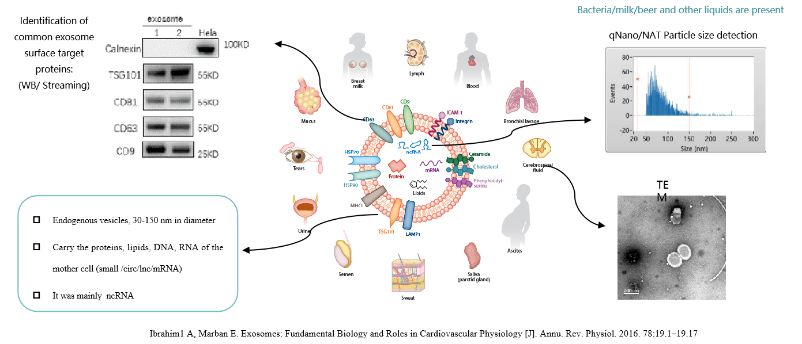
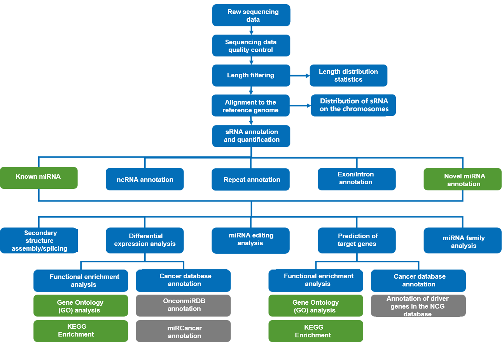
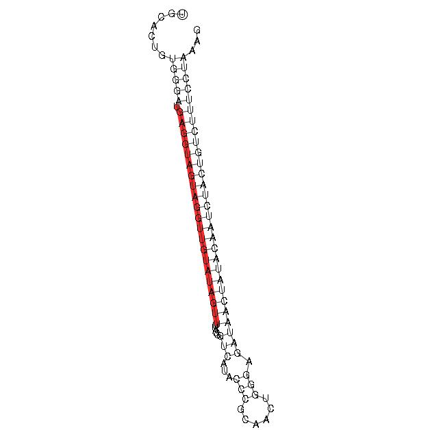

small RNA-seq Standard Analysis Report
| Contract ID | HXXXSCXXXXXXX |
| Contract Name | XXXXXXXXX_ExoRNA_WBI |
| Batch ID | XXXXSCXXXXXXXX-ZXX-FXXX |
| Reference Genome and Version | ensembl_106_homo_sapiens_grch38_primary |
| Report Time | 2025-04-18 |
| Reminder | Partial results are presented in this report, while full results will be delivered in data release. Hyperlink of results in this report will be only valid in data release, after statement confirmation. |
1 Introduction
Characteristics of exosomal RNA: The fragment distribution was small, mainly in the range of 25~200 nt. Different from ordinary tissues and cells, small RNA occupies a relatively high proportion in exosomes (Yuan, T., Huang, X., et al. 2016). There are a large number of interacting RNAs, including micro RNA(miRNAs), small interfering RNAs (siRNA), Piwi-interacting RNAs (piRNA), YRNAs (RNAs with unknown functions) and other types (Cambier, L., et al. 2017; Chuang, L., et al. 2018).

Small RNA sequencing projects are carried out as follows:

2 Library Construction and Sequencing
2.1 Sample Quality Control
Methods of sample quality control refer to QC report.
2.2 Library Construction, Quality Control and Sequencing
Briefly, 3’ and 5’ adaptors were ligated to 3’ and 5’ ends of small RNA, respectively. Then the first strand cDNA was synthesized after hybridization with reverse transcription primer. The double-stranded cDNA library was generated through PCR enrichment. After purification and size selection, libraries with insertions between 18~40 bp were ready for sequencing on Illumina sequencing platform with SE50. The experimental procedures of RNA library preparation are shown in Figure 1.

Figure 1. Workflow of library construction
The library was checked with Qubit and real-time PCR for quantification and bioanalyzer for size distribution detection. Quantified libraries will be pooled and sequenced on Illumina platforms, according to effective library concentration and data amount required.
Method details involved in the project are available at methods
3 Bioinformatics Analysis Pipeline
Small RNA in human extracellular vesicles (There are no cancer database notes for animals or plants):

4 Analysis Results
4.1 Raw Data
Original image data file from high-throughput sequencing (like Illumina) is transformed into sequenced reads (called Raw Data or Raw Reads) by CASAVA base recognition (Base Calling). Raw data are stored in FASTQ(fq) format files, which contain sequences of reads and corresponding base quality. Each read has four descriptive sentences in as follow:
FASTQ file:
@HWI-ST1276:71:C1162ACXX:1:1101:1208:2458 1:N:0:CGATGT
NAAGAACACGTTCGGTCACCTCAGCACACTTGTGAATGTCATGGGATCCAT
+
#55???BBBBB?BA@DEEFFCFFHHFFCFFHHHHHHHFAE0ECFFD/AEHH
(1) Line 1: the at sign (@) followed by sequence identifiers and optional description info (such as FASTA title line).
(2) Line 2: base sequences (raw read, A, G, C, and T).
(3) Line 3: the plus sign (+) optionally followed by the same Illumina sequence identifiers and description information as Line 1.
(4) Line 4: the quality values for each base, corresponding to the data in Line 2.
Illumina Sequence Identifier:
| ID Symbol | meaning |
|---|---|
| HWI-ST1276 | Instrument – unique identifier of the sequencer |
| 71 | run number – Run number on instrument |
| C1162ACXX | FlowCell ID – ID of flowcell |
| 1 | LaneNumber – positive integer |
| 1101 | TileNumber – positive integer |
| 1208 | X – x coordinate of the spot. Integer which can be negative |
| 2458 | Y – y coordinate of the spot. Integer which can be negative |
| 1 | ReadNumber - 1 for single reads; 1 or 2 for paired ends |
| N | whether it is filtered - NB :Y if the read is filtered out, not in the delivered fastq file, N otherwise |
| 0 | control number - 0 when none of the control bits are on, otherwise it is an even number |
| CGATGT | Illumina index sequences |
The details of sequencing identifier of Illumina are as follows:
(1) HWI-ST1276:71 HWI-ST1276, Instrument - unique identifier of the sequencer; 71, run number - Run number on instrument
(2) C1162ACXX:1:1101:1208:2458 means the coordinate of read on C1162ACXX (Flowcell ID) flowcell, line 1, 1101 tile is(x=1208, y=2458)
(3) 1:N:0:CGATGT the first number is 1 or 2, 1 means single reads or the first read of paired ends, 2 means the second of paired ends; the second letter means whether reads is adjusted(Y means yes, N means no); the third number represent the number of Control Bits in sequence; six bases on the fourth place is Illumina index sequence.
The relationship of Phred quality scores Q and base-calling error which were predicted by Illumina Casava 1.8 version Phred quality scores Q were logarithmically linked to base-calling error e :
| Error Rate | Quality Scores | ASCII code |
|---|---|---|
| 5% | 13 | . |
| 1% | 20 | 5 |
| 0.1% | 30 | ? |
| 0.01% | 40 | I |
Summary of important results
1. The number of known mature miRNA and precursor hairpin identified by this project are as follow：
| Types | Total | sample1 | sample10 | sample11 | sample12 | sample2 | sample3 | sample4 | sample5 | sample6 | sample7 | sample8 | sample9 |
|---|---|---|---|---|---|---|---|---|---|---|---|---|---|
| Mapped mature | 851 | 362 | 289 | 300 | 294 | 447 | 611 | 454 | 312 | 415 | 379 | 315 | 502 |
| Mapped mature | 851 | 362 | 289 | 300 | 294 | 447 | 611 | 454 | 312 | 415 | 379 | 315 | 502 |
| Mapped hairpin | 752 | 350 | 274 | 285 | 282 | 413 | 559 | 421 | 302 | 384 | 370 | 306 | 452 |
| Mapped hairpin | 752 | 350 | 274 | 285 | 282 | 413 | 559 | 421 | 302 | 384 | 370 | 306 | 452 |
2. The number of novel miRNA mature and hairpin predicted by this project is as follows:
| Types | Total | sample1 | sample10 | sample11 | sample12 | sample2 | sample3 | sample4 | sample5 | sample6 | sample7 | sample8 | sample9 |
|---|---|---|---|---|---|---|---|---|---|---|---|---|---|
| Mapped mature | 49 | 5 | 8 | 6 | 5 | 8 | 11 | 16 | 1 | 11 | 9 | 1 | 20 |
| Mapped hairpin | 50 | 5 | 8 | 6 | 5 | 8 | 12 | 16 | 1 | 11 | 9 | 1 | 20 |
3.For each difference comparison, the number of mirnas with DIFF and the number of mirnas up-regulated (UP) and down-regulated (DOWN) are as follows:
| GROUP | DIFF | UP | DOWN | threshold |
|---|---|---|---|---|
| test1vsControl | 12 | 4 | 8 | DESeq2 pvalue<=0.05,log2|foldchange|>=0 |
| test2vsControl | 12 | 6 | 6 | DESeq2 pvalue<=0.05,log2|foldchange|>=0 |
| test3vsControl | 10 | 5 | 5 | DESeq2 pvalue<=0.05,log2|foldchange|>=0 |
4.2 Data Quality Control
4.2.1 Data Quality summary
Table 4.1 Summary of the data production
| Sample | Reads | Bases | Error rate | Q20 | Q30 | GC content |
|---|---|---|---|---|---|---|
| sample1 | 11553617 | 0.58G | 0.01% | 98.46% | 94.70% | 54.87% |
| sample2 | 12399918 | 0.62G | 0.01% | 99.21% | 97.06% | 54.53% |
| sample3 | 11747245 | 0.59G | 0.01% | 99.28% | 97.25% | 54.75% |
| sample4 | 16314112 | 0.82G | 0.01% | 99.19% | 96.99% | 55.22% |
| sample5 | 18065032 | 0.90G | 0.01% | 99.35% | 97.10% | 54.86% |
| sample6 | 13864515 | 0.69G | 0.01% | 99.05% | 96.60% | 53.90% |
| sample7 | 15851552 | 0.79G | 0.01% | 99.00% | 96.24% | 55.64% |
| sample8 | 12941060 | 0.65G | 0.01% | 98.95% | 95.99% | 55.71% |
| sample9 | 14782491 | 0.74G | 0.01% | 99.30% | 97.43% | 54.02% |
| sample10 | 10850052 | 0.54G | 0.01% | 98.48% | 95.70% | 54.26% |
| sample11 | 11363757 | 0.57G | 0.01% | 99.05% | 96.84% | 55.25% |
| sample12 | 10525520 | 0.53G | 0.01% | 98.84% | 97.04% | 54.72% |
4.2.2 Data Filtering
The sequenced reads/raw reads often contain low quality reads or reads with adapters, which will negatively affect the quality of downstream analysis. To avoid this, it's necessary to filter raw reads to get clean reads.
Data filtering was performed as follows:
(1)Reads in which more than 50% of bases had a Qphred less than or equal to 5 were discarded.
(2)Reads in which N accounted for more than 10% were discarded. (N indicates that base information was indeterminable)
(3)Reads with 5' primer contamination were discarded.
(4)Reads lacking a 3' primer or insert tag were discarded.
(5)The 3' primer sequence was trimmed.
(6)Reads with poly(A), poly(T), poly(G), or poly(C) tails were discarded.
Table 4.2 Data filtering summary
| Sample | total reads | N% > 10% | low quality | 5' adapter contamine | 3' adapter null or insert null | with ployA/T/G/C | clean reads |
|---|---|---|---|---|---|---|---|
| sample1 | 11553617 (100.00%) | 7 (0.00%) | 0 (0.00%) | 31530 (0.27%) | 162849 (1.41%) | 3825 (0.03%) | 11355406 (98.28%) |
| sample2 | 12399918 (100.00%) | 7 (0.00%) | 0 (0.00%) | 75098 (0.61%) | 226639 (1.83%) | 4180 (0.03%) | 12093994 (97.53%) |
| sample3 | 11747245 (100.00%) | 12 (0.00%) | 0 (0.00%) | 5461 (0.05%) | 138425 (1.18%) | 7640 (0.07%) | 11595707 (98.71%) |
| sample4 | 16314112 (100.00%) | 18 (0.00%) | 0 (0.00%) | 28115 (0.17%) | 287864 (1.76%) | 7033 (0.04%) | 15991082 (98.02%) |
| sample5 | 18065032 (100.00%) | 160 (0.00%) | 0 (0.00%) | 59168 (0.33%) | 253733 (1.40%) | 5073 (0.03%) | 17746898 (98.24%) |
| sample6 | 13864515 (100.00%) | 82 (0.00%) | 0 (0.00%) | 14435 (0.10%) | 246945 (1.78%) | 6609 (0.05%) | 13596444 (98.07%) |
| sample7 | 15851552 (100.00%) | 99 (0.00%) | 0 (0.00%) | 14519 (0.09%) | 177302 (1.12%) | 5377 (0.03%) | 15654255 (98.76%) |
| sample8 | 12941060 (100.00%) | 84 (0.00%) | 0 (0.00%) | 7190 (0.06%) | 241969 (1.87%) | 3909 (0.03%) | 12687908 (98.04%) |
| sample9 | 14782491 (100.00%) | 22 (0.00%) | 0 (0.00%) | 145602 (0.98%) | 486933 (3.29%) | 19954 (0.13%) | 14129980 (95.59%) |
| sample10 | 10850052 (100.00%) | 0 (0.00%) | 0 (0.00%) | 700108 (6.45%) | 1581934 (14.58%) | 6582 (0.06%) | 8561428 (78.91%) |
| sample11 | 11363757 (100.00%) | 0 (0.00%) | 0 (0.00%) | 248579 (2.19%) | 578697 (5.09%) | 6672 (0.06%) | 10529809 (92.66%) |
| sample12 | 10525520 (100.00%) | 271 (0.00%) | 0 (0.00%) | 234566 (2.23%) | 788103 (7.49%) | 8382 (0.08%) | 9494198 (90.20%) |
-
(1) Sample: Sample ID
(2) Total Reads: Total sequenced reads
(3) N% > 10%: Percentage of reads with N > 10%
(4) Low Quality: Percentage of low quality reads
(5) 5' Adapter Contamination: Percentage of reads with 5' adapter contamination
(6) 3' Adapter or Insert Missing: Percentage of reads without a 3' adapter or insert
(7) With Poly(A)/(T)/(G)/(C) : Percentage of reads with poly(A), poly(T), poly(G), or poly(C) tails
(8) Clean Reads: Total clean reads followed by clean reads as a percentage of raw reads
4.2.3 Length distribution
The length of sRNA typically ranges from 18 to 40 nucleotides(nt). Analyzing length distribution helps determining the composition of small RNA samples. For example, miRNA is normally 21 or 22 nt, siRNA is 24 nt, and piRNA is between 28 and 30 nt.
Length distribution varies between plants and animals. In plants, there are often small RNA peaks at 21 or 24 nt, whereas peaks at 22 nt are normal in animals.
Table 4.3 Type and quantity of sRNA
| Sample | Total reads | Total bases (bp) | Uniq reads | Uniq bases (bp) |
|---|---|---|---|---|
| sample1 | 9484833 | 292915978 | 369536 | 10223815 |
| sample2 | 11234818 | 338089060 | 298503 | 7881269 |
| sample3 | 10993935 | 290030686 | 567637 | 14637405 |
| sample4 | 14280582 | 398666595 | 386721 | 10172032 |
| sample5 | 13174515 | 418583318 | 232014 | 6609372 |
| sample6 | 12510035 | 359943208 | 311054 | 8165828 |
| sample7 | 12011661 | 366430487 | 309715 | 8419664 |
| sample8 | 7958376 | 252603787 | 185196 | 5335335 |
| sample9 | 12575163 | 331126787 | 803844 | 20154639 |
| sample10 | 7550477 | 187579614 | 217633 | 5475983 |
| sample11 | 9380246 | 255172221 | 248772 | 6531809 |
| sample12 | 8687559 | 228497952 | 236138 | 6106977 |
-
(1) Sample: Sample ID
(2) Total reads: Total number of sRNA reads
(3) Total bases (bp): Total reads multiplied by sequence length
(4) Unique reads: Types of sRNA
(5) Unique bases (bp): Unique reads multiplied by sequence length
Figure 4.1 Length distribution of total sRNA
The x-axis is the length of sRNA reads, the y-axis is the percentage of one length read accounted for total sRNA.
4.3 Mapping to genome
Small RNA reads are mapped to the genome using Bowtie, to analyze their expression level and distribution on genome.
Table 4.4 Statistics of mapping results
| Sample | Total sRNA | Mapped sRNA | "+" Mapped sRNA | "-" Mapped sRNA |
|---|---|---|---|---|
| sample1 | 9484833 (100.00%) | 6973444 (73.52%) | 4974859 (52.45%) | 1998585 (21.07%) |
| sample2 | 11234818 (100.00%) | 9124588 (81.22%) | 6560149 (58.39%) | 2564439 (22.83%) |
| sample3 | 10993935 (100.00%) | 8268640 (75.21%) | 6411139 (58.32%) | 1857501 (16.90%) |
| sample4 | 14280582 (100.00%) | 10304709 (72.16%) | 8285345 (58.02%) | 2019364 (14.14%) |
| sample5 | 13174515 (100.00%) | 11062151 (83.97%) | 8443403 (64.09%) | 2618748 (19.88%) |
| sample6 | 12510035 (100.00%) | 9747919 (77.92%) | 7249462 (57.95%) | 2498457 (19.97%) |
| sample7 | 12011661 (100.00%) | 9212203 (76.69%) | 7133491 (59.39%) | 2078712 (17.31%) |
| sample8 | 7958376 (100.00%) | 6421384 (80.69%) | 5006040 (62.90%) | 1415344 (17.78%) |
| sample9 | 12575163 (100.00%) | 5821503 (46.29%) | 4613341 (36.69%) | 1208162 (9.61%) |
| sample10 | 7550477 (100.00%) | 4684183 (62.04%) | 3830352 (50.73%) | 853831 (11.31%) |
| sample11 | 9380246 (100.00%) | 7025859 (74.90%) | 5611968 (59.83%) | 1413891 (15.07%) |
| sample12 | 8687559 (100.00%) | 5717142 (65.81%) | 4733095 (54.48%) | 984047 (11.33%) |
-
(1) Sample: Sample ID
(2) Total sRNA: Number of total sRNA after length filtering
(3) Mapped sRNA: Number and percentage of sRNA mapped to genome
(4) + Mapped sRNA: Number and percentage of mapped sRNA in the same direction as the genome
(5) – Mapped sRNA: Number and percentage of mapped sRNA in the opposite direction to the genome
Density of small RNA reads on each chromosome is determined by each sample. Circos is used to graphically demonstrate distribution of reads on each chromosome. The longest 10 contigs or scaffolds were chosen for analysis
Figure 4.2 Reads distribution per chromosome
The chromosome is shown as the outer circle. Grey background in the middle area shows the distribution of 10,000 reads on the chromosome. Red represents the number of sRNAs on the sense strand of the chromosome, and blue represents the number of sRNAs on the antisense strand. All reads are shown in the center area of the circle. Yellow represents the number of sRNAs on the sense strand of the chromosome, and green represents the number of sRNAs on the antisense strand.
Result Directory: Mapping_Stat
4.4 Analysis of known miRNA
The reads mapped to reference genome were compared with specific sequences in the miRBase to obtain detail information, including the secondary structure of the mapped miRNAs, the sequence of miRNAs in each sample, length, the number of occurrences and other information. Mature miRNA is developed from precursor through Dicer enzyme digestion. Specificity of enzyme digestion sites makes the first base of the mature miRNA sequence highly biased, so we have also analyzed first base distribution analysis of miRNAs with different lengths , as well as distribution of other bases.
Table 4.5 Summary of known miRNA in each sample
| Types | Total | sample1 | sample10 | sample11 | sample12 | sample2 | sample3 | sample4 | sample5 | sample6 | sample7 | sample8 | sample9 |
|---|---|---|---|---|---|---|---|---|---|---|---|---|---|
| Mapped mature | 851 | 362 | 289 | 300 | 294 | 447 | 611 | 454 | 312 | 415 | 379 | 315 | 502 |
| Mapped hairpin | 752 | 350 | 274 | 285 | 282 | 413 | 559 | 421 | 302 | 384 | 370 | 306 | 452 |
| Mapped uniq sRNA | 15789 | 1151 | 777 | 846 | 766 | 1552 | 2465 | 1552 | 939 | 1537 | 1272 | 979 | 1953 |
| Mapped total sRNA | 3129434 | 95749 | 204319 | 123485 | 110708 | 278516 | 514552 | 418116 | 58630 | 571745 | 194024 | 60661 | 498929 |
-
(1) Mapped mature: The number of sRNAs align to miRNA mature sequence
(2) Mapped hairpin: The number of sRNAs align to miRNA hairpin sequence
(3) Mapped uniq sRNA: The number of mapped unique sRNAs
(4) Mapped total sRNA: The number of mapped total sRNAs

Figure 4.3 The secondary structure of the known miRNAs on partial schematic matches.
The entire sequence is a miRNA precursor, the red section is the mature sequence.
Table 4.6 Known miRNA expression profile
| miRNA | sample1 | sample10 | sample11 | sample12 | sample2 | sample3 | sample4 | sample5 | sample6 | sample7 | sample8 | sample9 |
|---|---|---|---|---|---|---|---|---|---|---|---|---|
| hsa-let-7a-2-3p | 0 | 0 | 13.00 | 0 | 0 | 4.00 | 0 | 4.00 | 0 | 0 | 0 | 5.00 |
| hsa-let-7a-3p | 15.00 | 97.00 | 31.00 | 5.00 | 32.00 | 99.00 | 8.00 | 7.00 | 47.00 | 23.00 | 9.00 | 111.00 |
| hsa-let-7a-5p | 5559.00 | 3159.00 | 2410.00 | 2303.00 | 13254.00 | 56801.00 | 17570.00 | 2049.00 | 25439.00 | 10596.00 | 2506.00 | 27401.00 |
| hsa-let-7b-3p | 22.00 | 0 | 11.00 | 14.00 | 43.00 | 120.00 | 34.00 | 1.00 | 23.00 | 36.00 | 3.00 | 66.00 |
| hsa-let-7b-5p | 11161.00 | 11426.00 | 9966.00 | 16727.00 | 39207.00 | 36335.00 | 42638.00 | 5320.00 | 63669.00 | 14301.00 | 4662.00 | 54825.00 |
(1) miRNA: Mature miRNA id
(2) Columns 2-n+1 show the corresponding sample’s read count
>hsa-let-7a-1
total read count 168405
hsa-let-7a-5p read count 167902
hsa-let-7a-3p read count 484
remaining read count 19
exp fffff5555555555555555555555fffffffffffffffffffffffffffff333333333333333333333fff
pri_seq ugggaugagguaguagguuguauaguuuuagggucacacccaccacugggagauaacuauacaaucuacugucuuuccua
pri_struct (((((.(((((((((((((((((((((.....(((...((((....)))).))))))))))))))))))))))))))))) #MM +/-
sample9_400_x2382 .....ugagguaguagguuguau......................................................... 0 +
sample12_10635_x49 .....ugagguaguagguuguau......................................................... 0 +
Figure 4.4 miRNA first nucleotide bias
The length of miRNAs is shown in the X axis, the Y axis is the percentage.
Figure 4.5 miRNA nucleotide bias at each position
The X axis shown each position of miRNA nucleotide, The Y axis shown the percentage
Result Directory: Known_miRNA
4.5 ncRNA Analysis
Using species-specific repeat sequence annotation information, or reference sequence information for de novo prediction of repeat sequences, align sRNA with repeat sequences to identify and remove potential repeat sequences, and statistically analyze the types and quantities of sRNA matching various repeat types.
The following table shows number of reads mapped to different kinds of ncRNAs.
Table 4.7 Statistics of annotated ncRNA
| Types | sample1 | sample10 | sample11 | sample12 | sample2 | sample3 | sample4 | sample5 | sample6 | sample7 | sample8 | sample9 |
|---|---|---|---|---|---|---|---|---|---|---|---|---|
| rRNA | 25253 | 22779 | 57421 | 65473 | 32385 | 64502 | 100301 | 34677 | 63702 | 129880 | 40961 | 71208 |
| rRNA:+ | 25251 | 22779 | 57421 | 65473 | 32382 | 64498 | 100278 | 34669 | 63695 | 129869 | 40960 | 71204 |
| rRNA:- | 2 | 0 | 0 | 0 | 3 | 4 | 23 | 8 | 7 | 11 | 1 | 4 |
| tRNA | 4410 | 1715 | 6369 | 6342 | 7042 | 13381 | 20791 | 5528 | 15974 | 8559 | 13935 | 7463 |
| tRNA:+ | 4344 | 1639 | 6326 | 6262 | 6901 | 13191 | 20518 | 5447 | 15651 | 8399 | 13820 | 7408 |
| tRNA:- | 66 | 76 | 43 | 80 | 141 | 190 | 273 | 81 | 323 | 160 | 115 | 55 |
| snRNA | 5081 | 2816 | 3152 | 2053 | 12401 | 17122 | 14038 | 6716 | 30407 | 8604 | 3379 | 7171 |
| snRNA:+ | 5071 | 2794 | 3144 | 2028 | 12377 | 17071 | 14014 | 6710 | 30368 | 8573 | 3377 | 7111 |
| snRNA:- | 10 | 22 | 8 | 25 | 24 | 51 | 24 | 6 | 39 | 31 | 2 | 60 |
| snoRNA | 10923 | 4214 | 5852 | 5208 | 15515 | 18297 | 20403 | 21213 | 30661 | 19308 | 10147 | 14316 |
| snoRNA:+ | 10921 | 4214 | 5852 | 5195 | 15508 | 18278 | 20399 | 21213 | 30661 | 19282 | 10143 | 14290 |
| snoRNA:- | 2 | 0 | 0 | 13 | 7 | 19 | 4 | 0 | 0 | 26 | 4 | 26 |
| YRNA | 2844627 | 523448 | 1421657 | 933412 | 3957938 | 1486882 | 1938999 | 5717978 | 3766489 | 2184404 | 2013084 | 1394521 |
| YRNA:+ | 2844626 | 523448 | 1421657 | 933412 | 3957938 | 1486882 | 1938999 | 5717978 | 3766488 | 2184404 | 2013083 | 1394521 |
| YRNA:- | 1 | 0 | 0 | 0 | 0 | 0 | 0 | 0 | 1 | 0 | 1 | 0 |
(1) Types: The kinds of ncRNA
(2) Columns 2-n+1 show the corresponding samples reads mapping to that kind of ncRNA
Result Directory: ncRNA
4.6 Repeat Sequences Alignment
If a species repeat transposon information, information of its repeated sequence is used to annotate the sRNA. Otherwise we will predict repeat sequences from the beginning based on reference genome. The sRNA is then aligned with the predicted repeating sequences and potential repetitive reads of sRNA are removed.. Statistics on the various repeats of sRNAs (uniquely expressed) and total number of sRNAs are calculated.
Results of the repeat classification are shown in the following figures.
Figure 4.6 Total repeat reads
Figure 4.7 Uniq repeat reads
Result Directory: Repeat
4.7 Exon and Intron Alignment
Small RNA reads are aligned to the exons and introns of mRNAs to find the degraded fragments of mRNA in the small RNA reads. The results are shown in the following table.
Table 4.8 sRNAs mapped to exon and intron
| Types | sample1 | sample10 | sample11 | sample12 | sample2 | sample3 | sample4 | sample5 | sample6 | sample7 | sample8 | sample9 |
|---|---|---|---|---|---|---|---|---|---|---|---|---|
| exon | 712670 | 184557 | 389064 | 407786 | 912088 | 433636 | 891589 | 1211200 | 1561804 | 1129795 | 852370 | 405857 |
| exon:+ | 692636 | 158459 | 327420 | 347732 | 884952 | 378822 | 804166 | 1180017 | 1514592 | 1077597 | 811059 | 320276 |
| exon:- | 20034 | 26098 | 61644 | 60054 | 27136 | 54814 | 87423 | 31183 | 47212 | 52198 | 41311 | 85581 |
| intron | 927012 | 2636324 | 3117121 | 2925867 | 1235534 | 3374125 | 4270773 | 1278194 | 2014427 | 2927956 | 1469922 | 1829203 |
| intron:+ | 907712 | 2628214 | 3095960 | 2906223 | 1212947 | 3324414 | 4215756 | 1246230 | 1979263 | 2880796 | 1404899 | 1802979 |
| intron:- | 19300 | 8110 | 21161 | 19644 | 22587 | 49711 | 55017 | 31964 | 35164 | 47160 | 65023 | 26224 |
(1) Types: Types of exon and intron
(2) Columns 2-n+1 show each corresponding sample’s results
Result Directory: gene
| Q: Why reads are aligned exons and introns？ |
| A: The sequences of sRNA sequencing may have degraded fragments of mRNA. This part of the analysis is to annotate the sequencing reads as much as possible. On another hand, it is to remove the sequences from these genes before the new miRNA predicted. As these regions might be the product of degraded fragments. These regions can predict relatively few miRNAs compared to the gene intergenic region. In order to eliminate interference, this part of the reads is currently taken directly. |
4.8 Novel miRNA Prediction
The characteristic hairpin structure of miRNA precursors can be used to predict novel miRNA, which can be conducted by miREvo (Wen et al., 2012) and mirdeep2 (Friedlander et al., 2011). The results are shown in the following tables and figures.
Table 4.9 Summary of novel miRNA
| Types | Total | sample1 | sample10 | sample11 | sample12 | sample2 | sample3 | sample4 | sample5 | sample6 | sample7 | sample8 | sample9 |
|---|---|---|---|---|---|---|---|---|---|---|---|---|---|
| Mapped mature | 49 | 5 | 8 | 6 | 5 | 8 | 11 | 16 | 1 | 11 | 9 | 1 | 20 |
| Mapped star | 2 | 1 | 1 | ||||||||||
| Mapped hairpin | 50 | 5 | 8 | 6 | 5 | 8 | 12 | 16 | 1 | 11 | 9 | 1 | 20 |
| Mapped uniq sRNA | 119 | 6 | 8 | 7 | 5 | 11 | 15 | 18 | 1 | 12 | 10 | 3 | 23 |
| Mapped total sRNA | 585 | 10 | 11 | 24 | 51 | 42 | 33 | 113 | 1 | 112 | 41 | 5 | 142 |
(1) Type: The type of sRNA mapping
(2) Total:The total amount
(3) Columns 3-n+2 show the amount aligned to the predicted hairpin in each corresponding sample
Figure 4.8 The secondary structure of the novel miRNAs on partial schematic matches.
The entire sequence is a miRNA precursor, the red section is the mature sequence
Table 4.10 Novel miRNA expression profile
| miRNA | sample1 | sample10 | sample11 | sample12 | sample2 | sample3 | sample4 | sample5 | sample6 | sample7 | sample8 | sample9 |
|---|---|---|---|---|---|---|---|---|---|---|---|---|
| novel_138 | 0 | 0 | 0 | 0 | 0 | 0 | 0 | 0 | 0 | 0 | 0 | 7.00 |
| novel_149 | 0 | 0 | 0 | 0 | 0 | 0 | 0 | 0 | 27.00 | 0 | 0 | 0 |
| novel_150 | 0 | 0 | 1.00 | 0 | 10.00 | 1.00 | 10.00 | 0 | 0 | 2.00 | 0 | 0 |
| novel_153 | 0 | 0 | 0 | 0 | 0 | 7.00 | 6.00 | 0 | 0 | 0 | 0 | 0 |
| novel_157 | 6.00 | 0 | 0 | 21.00 | 14.00 | 0 | 15.00 | 0 | 34.00 | 11.00 | 5.00 | 13.00 |
(1) miRNA: Mature miRNA id
(2) Columns 2-n+1 show the corresponding sample’s read count
Figure 4.9 miRNA first nucleotide bias
The length of miRNAs is shown in the X axis, the Y axis is the percentage.
Figure 4.10 miRNA nucleotide bias at each position
The X axis shown each position of miRNA nucleotide, The Y axis shown the percentage
Result Directory: Novel_miRNA
4.9 small RNA annotation
The comparison and annotation of all small RNAs with all kinds of RNAs were summarized. Since there are cases where one sRNA compares several different annotation information at the same time, in order to make each unique sRNA have a unique annotation, small RNAs are classified according to the known miRNA > rRNA > tRNA > snRNA > snoRNA > YRNA > repeat > gene > novel miRNA detection priority order.
The results of this process are shown below.
Table 4.11 Result table
| Types | sample1 | sample1(percent) | sample10 | sample10(percent) | sample11 | sample11(percent) | sample12 | sample12(percent) | sample2 | sample2(percent) | sample3 | sample3(percent) | sample4 | sample4(percent) | sample5 | sample5(percent) | sample6 | sample6(percent) | sample7 | sample7(percent) | sample8 | sample8(percent) | sample9 | sample9(percent) |
|---|---|---|---|---|---|---|---|---|---|---|---|---|---|---|---|---|---|---|---|---|---|---|---|---|
| total | 6973444 | 100.00% | 4684183 | 100.00% | 7025859 | 100.00% | 5717142 | 100.00% | 9124588 | 100.00% | 8268640 | 100.00% | 10304709 | 100.00% | 11062151 | 100.00% | 9747919 | 100.00% | 9212203 | 100.00% | 6421384 | 100.00% | 5821503 | 100.00% |
| known_miRNA | 95749 | 1.37% | 204319 | 4.36% | 123485 | 1.76% | 110708 | 1.94% | 278516 | 3.05% | 514552 | 6.22% | 418116 | 4.06% | 58630 | 0.53% | 571745 | 5.87% | 194024 | 2.11% | 60661 | 0.94% | 498929 | 8.57% |
| rRNA | 25253 | 0.36% | 22779 | 0.49% | 57421 | 0.82% | 65473 | 1.15% | 32385 | 0.35% | 64502 | 0.78% | 100301 | 0.97% | 34677 | 0.31% | 63702 | 0.65% | 129880 | 1.41% | 40961 | 0.64% | 71208 | 1.22% |
| tRNA | 4410 | 0.06% | 1715 | 0.04% | 6369 | 0.09% | 6342 | 0.11% | 7042 | 0.08% | 13381 | 0.16% | 20791 | 0.20% | 5528 | 0.05% | 15974 | 0.16% | 8559 | 0.09% | 13935 | 0.22% | 7463 | 0.13% |
| snRNA | 5081 | 0.07% | 2816 | 0.06% | 3152 | 0.04% | 2053 | 0.04% | 12401 | 0.14% | 17122 | 0.21% | 14038 | 0.14% | 6716 | 0.06% | 30407 | 0.31% | 8604 | 0.09% | 3379 | 0.05% | 7171 | 0.12% |
| snoRNA | 10923 | 0.16% | 4214 | 0.09% | 5852 | 0.08% | 5208 | 0.09% | 15515 | 0.17% | 18297 | 0.22% | 20403 | 0.20% | 21213 | 0.19% | 30661 | 0.31% | 19308 | 0.21% | 10147 | 0.16% | 14316 | 0.25% |
| YRNA | 2844627 | 40.79% | 523448 | 11.17% | 1421657 | 20.23% | 933412 | 16.33% | 3957938 | 43.38% | 1486882 | 17.98% | 1938999 | 18.82% | 5717978 | 51.69% | 3766489 | 38.64% | 2184404 | 23.71% | 2013084 | 31.35% | 1394521 | 23.95% |
| repeat | 748968 | 10.74% | 238329 | 5.09% | 527682 | 7.51% | 413588 | 7.23% | 681872 | 7.47% | 535560 | 6.48% | 1017817 | 9.88% | 924446 | 8.36% | 497867 | 5.11% | 1209970 | 13.13% | 1112709 | 17.33% | 475700 | 8.17% |
| novel_miRNA | 10 | 0.00% | 11 | 0.00% | 24 | 0.00% | 51 | 0.00% | 42 | 0.00% | 33 | 0.00% | 113 | 0.00% | 1 | 0.00% | 112 | 0.00% | 41 | 0.00% | 5 | 0.00% | 142 | 0.00% |
| exon:+ | 692636 | 9.93% | 158459 | 3.38% | 327420 | 4.66% | 347732 | 6.08% | 884952 | 9.70% | 378822 | 4.58% | 804166 | 7.80% | 1180017 | 10.67% | 1514592 | 15.54% | 1077597 | 11.70% | 811059 | 12.63% | 320276 | 5.50% |
| exon:- | 20034 | 0.29% | 26098 | 0.56% | 61644 | 0.88% | 60054 | 1.05% | 27136 | 0.30% | 54814 | 0.66% | 87423 | 0.85% | 31183 | 0.28% | 47212 | 0.48% | 52198 | 0.57% | 41311 | 0.64% | 85581 | 1.47% |
| intron:+ | 907712 | 13.02% | 2628214 | 56.11% | 3095960 | 44.07% | 2906223 | 50.83% | 1212947 | 13.29% | 3324414 | 40.21% | 4215756 | 40.91% | 1246230 | 11.27% | 1979263 | 20.30% | 2880796 | 31.27% | 1404899 | 21.88% | 1802979 | 30.97% |
| intron:- | 19300 | 0.28% | 8110 | 0.17% | 21161 | 0.30% | 19644 | 0.34% | 22587 | 0.25% | 49711 | 0.60% | 55017 | 0.53% | 31964 | 0.29% | 35164 | 0.36% | 47160 | 0.51% | 65023 | 1.01% | 26224 | 0.45% |
| other | 1598741 | 22.93% | 865671 | 18.48% | 1374032 | 19.56% | 846654 | 14.81% | 1991255 | 21.82% | 1810550 | 21.90% | 1611769 | 15.64% | 1803568 | 16.30% | 1194731 | 12.26% | 1399662 | 15.19% | 844211 | 13.15% | 1116993 | 19.19% |
-
(1) total: The quantity of sRNA reads mapped to genome.
(2) known_miRNA: The number and percentage of sRNAs reads mapped to known miRNA.
(3) rRNA/tRNA/snRNA/snoRNA/YRNA:The number and percentage of sRNAs reads mapped to rRNA/tRNA/snRNA/snoRNA/YRNA.
(4) repeat: The number and percentage of sRNAs reads mapped to repeat region.
(5) novel_miRNA: The number and percentage of sRNAs reads mapped to novel miRNA.
(6) exon: +/exon : -/exon : +/intron : -/intron: The number and percentage of sRNAs reads mapped to exon (+/-) and intron(+/-).
(7) other: The number and percentage of sRNAs reads mapped genome but could not mapped to known miRNA, ncRNA, repeat, novel miRNA, exon/intron.
Result Directory: Category
4.10 miRNA Base Edit
Position 2~8 of a mature miRNA is called a seed region, which is highly conserved. Targets of a miRNA can be different depending on change of nucleotides in seed region. In our analysis workflow, miRNAs with base edits can be detected by aligning unannotated sRNA reads with mature miRNAs from miRBase.
>pre-miRNA: hsa-let-7a-1 7256 1725 23.77%
mature miRNA: hsa-let-7a-5p 6772 0 0.0%
site1: 48 0.71%
U->A: 17 0.25%
U->G: 8 0.12%
U->C: 23 0.34%
site2: 11 0.16%
G->U: 1 0.01%
G->C: 2 0.03%
G->A: 8 0.12%
mature miRNA: mature miRNA, the number of reads mapped to mature miRNA, the number and percentage of reads with base edit.
site[1-n]: the details of each base of this mature miRNA, each line represent the number and percentage of reads with base edit.
Result Directory: miRNA_editing
4.11 miRNA Family Analysis
The following table explores the occurrence of known miRNA and novel miRNA families, identified from samples of other species. A "+" means that the miRNA family exists in this species, and a "-" means the miRNA family does not exist in this species.
Table 4.12 Result table
| Species | mir-708 | mir-143 | mir-879 | mir-1260b | mir-8 | mir-1343 | mir-632 | mir-22 | mir-1267 | mir-505 | mir-155 | mir-373 | mir-515 | mir-4536 | mir-676 | MIR5649 | mir-3146 | mir-24 | mir-96 | mir-190 | mir-664 | mir-1245 | mir-4523 | mir-205 | mir-941 | mir-760 | mir-3661 | mir-1306 | mir-27 | mir-540 | mir-1273c | mir-2804 | mir-4672 | mir-186 | mir-629 | mir-1294 | mir-6516 | mir-19 | mir-331 | mir-298 | mir-574 | mir-4504 | mir-490 | mir-194 | mir-322 | mir-887 | mir-328 | mir-937 | mir-139 | mir-266 | mir-127 | mir-1256 | mir-95 | mir-654 | mir-423 | mir-3127 | mir-3615 | mir-3155 | mir-1270 | mir-7 | mir-598 | mir-1303 | mir-4449 | mir-147 | mir-101 | mir-342 | mir-3174 | mir-618 | mir-671 | mir-6724 | mir-455 | mir-136 | mir-3074 | mir-431 | mir-486 | mir-641 | mir-181 | mir-378 | mir-607 | mir-365 | mir-3622 | mir-148 | mir-597 | mir-9 | mir-142 | MIR5274 | mir-224 | mir-3940 | mir-339 | mir-128 | mir-122 | mir-297 | mir-3913 | mir-337 | mir-210 | mir-1301 | mir-765 | mir-1246 | mir-412 | mir-299 | mir-1976 | mir-616 | mir-132 | mir-183 | mir-3149 | mir-3130 | mir-329 | mir-619 | mir-6511 | mir-5885 | mir-296 | mir-500 | mir-326 | mir-454 | mir-150 | mir-3529 | mir-942 | mir-1 | mir-28 | mir-126 | mir-149 | mir-873 | mir-3158 | mir-722 | let-7 | mir-4657 | mir-379 | mir-21 | mir-433 | mir-1986 | mir-137 | mir-3064 | mir-889 | mir-103 | mir-383 | mir-15 | mir-129 | mir-146 | mir-338 | mir-1290 | mir-154 | mir-450 | mir-504 | mir-6827 | mir-2278 | mir-627 | mir-4742 | mir-3117 | mir-6859 | mir-636 | mir-3202 | mir-1180 | mir-558 | mir-204 | mir-214 | mir-672 | mir-1287 | mir-3156 | mir-483 | mir-1255 | mir-3170 | mir-4662 | mir-432 | mir-187 | mir-665 | mir-642 | mir-182 | mir-6770 | mir-302 | mir-1277 | mir-188 | mir-133 | mir-3180 | mir-23c | mir-877 | mir-1284 | mir-943 | mir-23 | mir-449 | mir-584 | mir-622 | mir-1248 | mir-628 | mir-1228 | mir-1288 | mir-541 | mir-624 | mir-582 | mir-221 | mir-3192 | mir-3135 | mir-3473 | mir-330 | mir-425 | mir-4738 | mir-26 | mir-1291 | mir-184 | mir-130 | mir-499 | mir-5681 | mir-218 | mir-202 | mir-1299 | mir-770 | mir-874 | mir-651 | mir-1269 | mir-1910 | mir-363 | mir-191 | mir-1260a | mir-1278 | mir-744 | mir-1276 | mir-203 | mir-25 | mir-4444 | mir-3121 | mir-4423 | mir-4488 | mir-484 | mir-549 | mir-1282 | mir-4667 | mir-935 | mir-4773 | mir-3937 | mir-3179 | mir-362 | mir-153 | mir-10 | mir-3154 | mir-503 | mir-368 | mir-375 | mir-145 | mir-3198 | mir-31 | mir-766 | mir-1908 | mir-30 | mir-3934 | mir-3605 | mir-196 | mir-576 | mir-615 | mir-491 | mir-452 | mir-605 | mir-1193 | mir-345 | mir-3129 | mir-4788 | mir-199 | mir-134 | mir-769 | mir-550 | mir-1226 | mir-197 | mir-485 | mir-3660 | mir-1292 | mir-548 | mir-493 | mir-663 | mir-6505 | mir-542 | mir-581 | mir-335 | mir-1307 | mir-124 | mir-144 | mir-3188 | mir-1262 | mir-4421 | mir-374 | mir-1304 | mir-4677 | mir-3173 | mir-247 | mir-3065 | mir-2110 | mir-4429 | mir-652 | mir-1296 | mir-135 | mir-3199 | mir-1914 | mir-192 | mir-324 | mir-29 | mir-1789 | mir-32 | mir-589 | mir-140 | mir-1293 | mir-4435 | mir-370 | mir-625 | mir-1298 | mir-1468 | mir-17 | mir-361 | mir-1281 | mir-193 | mir-3150 | mir-497 | mir-185 | mir-1268 | mir-3648 | mir-2355 | mir-4766 | mir-34 | mir-223 | mir-555 | mir-105 | mir-1289 | mir-219 | mir-320 | mir-14 | mir-1271 | mir-506 | mir-451 | mir-3126 | mir-668 | mir-290 | mir-675 | mir-1285 | mir-340 | mir-610 | mir-216 | mir-3138 |
|---|---|---|---|---|---|---|---|---|---|---|---|---|---|---|---|---|---|---|---|---|---|---|---|---|---|---|---|---|---|---|---|---|---|---|---|---|---|---|---|---|---|---|---|---|---|---|---|---|---|---|---|---|---|---|---|---|---|---|---|---|---|---|---|---|---|---|---|---|---|---|---|---|---|---|---|---|---|---|---|---|---|---|---|---|---|---|---|---|---|---|---|---|---|---|---|---|---|---|---|---|---|---|---|---|---|---|---|---|---|---|---|---|---|---|---|---|---|---|---|---|---|---|---|---|---|---|---|---|---|---|---|---|---|---|---|---|---|---|---|---|---|---|---|---|---|---|---|---|---|---|---|---|---|---|---|---|---|---|---|---|---|---|---|---|---|---|---|---|---|---|---|---|---|---|---|---|---|---|---|---|---|---|---|---|---|---|---|---|---|---|---|---|---|---|---|---|---|---|---|---|---|---|---|---|---|---|---|---|---|---|---|---|---|---|---|---|---|---|---|---|---|---|---|---|---|---|---|---|---|---|---|---|---|---|---|---|---|---|---|---|---|---|---|---|---|---|---|---|---|---|---|---|---|---|---|---|---|---|---|---|---|---|---|---|---|---|---|---|---|---|---|---|---|---|---|---|---|---|---|---|---|---|---|---|---|---|---|---|---|---|---|---|---|---|---|---|---|---|---|---|---|---|---|---|---|---|---|---|---|---|---|---|---|---|---|---|---|---|---|---|---|---|---|---|---|---|---|---|---|---|---|---|---|
| Locusta migratoria | - | - | - | - | + | - | - | - | - | - | - | - | - | - | - | - | - | - | - | - | - | - | - | - | - | - | - | - | - | - | - | - | - | - | - | - | - | - | - | - | - | - | - | - | - | - | - | - | - | - | - | - | - | - | - | - | - | - | - | - | - | - | - | - | - | - | - | - | - | - | - | - | - | - | - | - | - | - | - | - | - | - | - | + | - | - | - | - | - | - | - | - | - | - | + | - | - | - | - | - | - | - | - | - | - | - | - | - | - | - | - | - | - | - | - | - | - | - | - | - | - | - | - | - | - | - | - | - | - | - | - | - | - | - | - | - | - | - | - | - | - | - | - | - | - | - | - | - | - | - | - | - | - | - | - | - | - | - | - | - | - | - | - | - | - | - | - | - | - | - | - | - | - | - | - | - | - | - | - | - | - | - | - | - | - | - | - | - | - | - | - | - | - | - | - | - | - | - | - | - | - | - | - | - | - | - | - | - | - | - | - | - | - | - | - | - | - | - | - | - | - | - | - | - | - | - | - | - | - | - | - | + | - | - | - | - | - | - | - | - | - | - | - | - | - | - | - | - | - | - | - | - | - | - | - | - | - | - | - | - | - | - | - | - | - | - | - | - | - | - | - | - | - | - | - | - | - | - | - | - | - | - | - | - | - | - | - | - | - | - | - | - | - | - | - | - | - | - | - | - | - | - | - | - | - | - | - | - | - | - | - | - | - | - | - | - | - | - | - | - | - | - | - | - | - | - | - | - | - | - | - | - | - |
| Metriaclima zebra | - | - | - | - | - | - | - | - | - | - | - | - | - | - | - | - | - | - | - | - | - | - | - | - | - | - | - | - | - | - | - | - | - | - | - | - | - | - | - | - | - | - | - | - | - | - | - | - | - | - | - | - | - | - | - | - | - | - | - | - | - | - | - | - | - | - | - | - | - | - | - | - | - | - | - | - | - | - | - | - | - | - | - | - | - | - | - | - | - | - | - | - | - | - | - | - | - | - | - | - | - | - | - | - | - | - | - | - | - | - | - | - | - | - | - | - | - | - | - | - | - | - | - | - | - | - | - | - | - | - | - | - | - | - | - | - | - | - | - | - | - | - | - | - | - | - | - | - | - | - | - | - | - | - | - | - | - | - | - | - | - | - | - | - | - | - | - | - | - | - | - | - | - | - | - | - | - | - | - | - | - | - | - | - | - | - | - | - | - | - | - | - | - | - | - | - | - | - | - | - | - | - | - | - | - | - | - | - | - | - | - | - | - | - | - | - | - | - | - | - | - | - | - | - | - | - | - | - | - | - | - | - | - | - | - | - | - | - | - | - | - | - | - | - | - | - | - | - | - | - | - | - | - | - | - | - | - | - | - | - | - | - | - | - | - | - | - | - | - | - | - | - | - | - | - | - | - | - | - | - | - | - | - | - | - | - | - | - | - | - | - | - | - | - | - | - | - | - | - | - | - | - | - | - | - | - | - | - | - | - | - | - | - | - | - | - | - | - | - | - | - | - | - | - | - | - | - | - | - | - | - | - | - |
| Pristionchus pacificus | - | - | - | - | - | - | - | - | - | - | - | - | - | - | - | - | - | - | - | - | - | - | - | - | - | - | - | - | - | - | - | - | - | - | - | - | - | - | - | - | - | - | - | - | - | - | - | - | - | - | - | - | - | - | - | - | - | - | - | - | - | - | - | - | - | - | - | - | - | - | - | - | - | - | - | - | - | - | - | - | - | - | - | + | - | - | - | - | - | - | - | - | - | - | - | - | - | - | - | - | - | - | - | - | - | - | - | - | - | - | - | - | - | - | - | - | - | + | - | - | - | - | - | - | + | - | - | - | - | - | - | - | - | - | - | - | - | - | - | - | - | - | - | - | - | - | - | - | - | - | - | - | - | - | - | - | - | - | - | - | - | - | - | - | - | - | - | - | - | - | - | - | - | - | - | - | - | - | - | - | - | - | - | - | - | - | - | - | - | - | - | - | - | - | - | - | - | - | - | - | - | - | - | - | - | - | - | - | - | - | - | - | - | - | - | - | + | - | - | - | - | - | - | - | - | - | - | - | - | - | - | - | - | - | - | - | - | - | - | - | - | - | - | - | - | - | - | - | - | - | - | - | - | - | - | - | - | - | - | - | - | - | - | - | - | - | - | - | - | - | - | + | - | - | - | - | - | - | - | - | - | - | - | - | - | - | - | - | - | - | - | - | - | - | - | - | - | - | - | - | - | - | - | - | - | - | - | - | - | - | - | - | - | - | - | - | - | - | - | - | - | - | - | - | - | - | - | - | - | - | - | - | - |
| Salmo salar | - | + | - | - | + | - | - | + | - | - | + | - | - | - | - | - | - | + | + | + | - | - | - | + | - | - | - | - | + | - | - | - | - | - | - | - | - | + | - | - | - | - | - | + | - | - | - | - | + | - | - | - | - | - | - | - | - | - | - | + | - | - | - | - | + | - | - | - | - | - | + | - | - | - | - | - | + | - | - | + | - | + | - | + | + | - | - | - | - | + | + | - | - | - | + | - | - | - | - | - | - | - | + | + | - | - | - | - | - | - | - | - | - | + | - | - | - | + | - | + | - | - | - | + | + | - | - | + | - | - | + | - | - | + | - | + | + | + | + | - | - | - | - | - | - | - | - | - | - | - | - | - | - | + | + | - | - | - | - | - | - | - | - | - | - | - | + | - | - | - | - | + | - | - | - | - | - | + | - | - | - | - | - | - | - | - | - | - | + | - | - | - | - | - | - | + | - | - | + | + | - | + | + | - | - | - | - | - | - | - | - | - | - | - | - | + | + | - | - | - | - | - | - | - | - | - | - | - | - | - | + | + | - | - | - | + | + | - | - | - | - | + | - | - | + | - | - | - | - | - | - | - | - | - | + | - | - | - | - | - | - | - | - | - | - | - | - | - | - | - | - | - | + | - | - | - | - | - | - | - | - | - | - | - | - | - | + | - | - | + | - | + | - | - | - | + | - | - | - | - | - | - | + | - | - | + | - | - | - | - | - | - | - | - | - | - | - | - | + | - | - | - | - | - | - | - | - | - | - | - | - | + | - |
| Xenopus tropicalis | - | + | - | - | + | - | - | + | - | - | + | - | - | - | - | - | - | + | + | + | - | - | - | + | - | - | - | - | + | - | - | - | - | - | - | - | - | + | - | - | - | - | - | + | - | - | - | - | + | - | - | - | - | - | - | - | - | - | - | + | - | - | - | - | + | - | - | - | - | - | + | - | - | - | - | - | + | - | - | + | - | + | - | + | + | - | - | - | - | + | + | - | - | - | + | - | - | - | - | - | - | - | + | + | - | - | - | - | - | - | - | - | - | - | + | - | - | + | - | + | - | - | - | - | + | - | - | - | - | - | + | - | - | + | + | + | + | + | + | - | - | - | - | - | - | - | - | - | - | - | - | - | - | + | + | - | - | - | - | - | - | - | - | + | - | - | + | - | + | - | - | + | - | - | - | - | - | + | + | - | - | - | - | - | - | - | - | - | + | - | - | - | - | + | - | + | - | + | + | + | - | + | + | - | - | - | - | - | - | + | + | - | - | - | - | + | + | - | - | - | - | - | - | - | - | - | - | - | - | - | + | + | - | - | - | + | + | - | + | - | - | + | - | - | + | - | - | - | - | - | - | - | - | - | + | - | - | - | - | - | - | - | - | - | - | - | - | - | - | - | - | + | + | - | - | - | - | - | - | - | - | - | - | - | - | - | + | - | - | + | - | + | - | - | - | + | - | - | - | - | - | - | + | - | - | + | - | - | - | - | - | - | - | + | + | - | - | - | + | - | - | - | - | + | - | - | - | - | - | - | - | + | - |
| Biston betularia | - | - | - | - | - | - | - | - | - | - | - | - | - | - | - | - | - | - | - | - | - | - | - | - | - | - | - | - | - | - | - | - | - | - | - | - | - | - | - | - | - | - | - | - | - | - | - | - | - | - | - | - | - | - | - | - | - | - | - | - | - | - | - | - | - | - | - | - | - | - | - | - | - | - | - | - | - | - | - | - | - | - | - | - | - | - | - | - | - | - | - | - | - | - | - | - | - | - | - | - | - | - | - | - | - | - | - | - | - | - | - | - | - | - | - | - | - | - | - | - | - | - | - | - | - | - | - | - | - | - | - | - | - | - | - | - | - | - | - | - | - | - | - | - | - | - | - | - | - | - | - | - | - | - | - | - | - | - | - | - | - | - | - | - | - | - | - | - | - | - | - | - | - | - | - | - | - | - | - | - | - | - | - | - | - | - | - | - | - | - | - | - | - | - | - | - | - | - | - | - | - | - | - | - | - | - | - | - | - | - | - | - | - | - | - | - | - | - | - | - | - | - | - | - | - | - | - | - | - | - | - | - | - | - | - | - | - | - | - | - | - | - | - | - | - | - | - | - | - | - | - | - | - | - | - | - | - | - | - | - | - | - | - | - | - | - | - | - | - | - | - | - | - | - | - | - | - | - | - | - | - | - | - | - | - | - | - | - | - | - | - | - | - | - | - | - | - | - | - | - | - | - | - | - | - | - | - | - | - | - | - | - | - | - | - | - | - | - | - | - | - | - | - | - | - | - | - | - | - | - | - | - | - |
| Drosophila melanogaster | - | - | - | - | + | - | - | - | - | - | - | - | - | - | - | - | - | - | - | + | - | - | - | - | - | - | - | - | - | - | - | - | - | - | - | - | - | - | - | - | - | - | - | - | - | - | - | - | - | - | - | - | - | - | - | - | - | - | - | + | - | - | - | - | - | - | - | - | - | - | - | - | - | - | - | - | - | - | - | - | - | - | - | + | - | - | - | - | - | - | - | - | - | - | + | - | - | - | - | - | - | - | - | - | - | - | - | - | - | - | - | - | - | - | - | - | - | + | - | - | - | - | - | - | + | - | - | - | - | - | + | - | - | - | - | - | - | - | - | - | - | - | - | - | - | - | - | - | - | - | - | - | - | - | - | - | - | - | - | - | - | - | - | - | - | - | - | - | - | - | - | + | - | - | - | - | - | - | - | - | - | - | - | - | - | - | - | - | - | - | - | - | - | - | - | - | - | + | - | - | - | - | - | - | - | - | - | - | - | - | - | - | - | - | - | - | + | - | - | - | - | - | - | - | - | - | - | - | - | - | - | + | - | - | - | + | - | - | + | - | - | - | - | - | - | - | - | - | - | - | - | - | - | - | - | - | - | - | - | - | - | - | - | - | - | - | - | - | - | - | - | + | - | - | - | - | - | - | - | - | - | - | - | - | - | - | - | - | - | - | - | + | - | - | - | - | - | - | - | - | - | - | - | - | - | + | - | - | - | - | - | - | - | + | - | - | - | - | + | - | + | - | - | - | - | - | - | - | - | - | - | + | - |
| Strigamia maritima | - | - | - | - | - | - | - | - | - | - | - | - | - | - | - | - | - | - | - | - | - | - | - | - | - | - | - | - | - | - | - | - | - | - | - | - | - | - | - | - | - | - | - | - | - | - | - | - | - | - | - | - | - | - | - | - | - | - | - | - | - | - | - | - | - | - | - | - | - | - | - | - | - | - | - | - | - | - | - | - | - | - | - | - | - | - | - | - | - | - | - | - | - | - | - | - | - | - | - | - | - | - | - | - | - | - | - | - | - | - | - | - | - | - | - | - | - | - | - | - | - | - | - | - | - | - | - | - | - | - | - | - | - | - | - | - | - | - | - | - | - | - | - | - | - | - | - | - | - | - | - | - | - | - | - | - | - | - | - | - | - | - | - | - | - | - | - | - | - | - | - | - | - | - | - | - | - | - | - | - | - | - | - | - | - | - | - | - | - | - | - | - | - | - | - | - | - | - | - | - | - | - | - | - | - | - | - | - | - | - | - | - | - | - | - | - | - | - | - | - | - | - | - | - | - | - | - | - | - | - | - | - | - | - | - | - | - | - | - | - | - | - | - | - | - | - | - | - | - | - | - | - | - | - | - | - | - | - | - | - | - | - | - | - | - | - | - | - | - | - | - | - | - | - | - | - | - | - | - | - | - | - | - | - | - | - | - | - | - | - | - | - | - | - | - | - | - | - | - | - | - | - | - | - | - | - | - | - | - | - | - | - | - | - | - | - | - | - | - | - | - | - | - | - | - | - | - | - | - | - | - | - | - |
| Mareks disease virus type 1 | - | - | - | - | - | - | - | - | - | - | - | - | - | - | - | - | - | - | - | - | - | - | - | - | - | - | - | - | - | - | - | - | - | - | - | - | - | - | - | - | - | - | - | - | - | - | - | - | - | - | - | - | - | - | - | - | - | - | - | - | - | - | - | - | - | - | - | - | - | - | - | - | - | - | - | - | - | - | - | - | - | - | - | - | - | - | - | - | - | - | - | - | - | - | - | - | - | - | - | - | - | - | - | - | - | - | - | - | - | - | - | - | - | - | - | - | - | - | - | - | - | - | - | - | - | - | - | - | - | - | - | - | - | - | - | - | - | - | - | - | - | - | - | - | - | - | - | - | - | - | - | - | - | - | - | - | - | - | - | - | - | - | - | - | - | - | - | - | - | - | - | - | - | - | - | - | - | - | - | - | - | - | - | - | - | - | - | - | - | - | - | - | - | - | - | - | - | - | - | - | - | - | - | - | - | - | - | - | - | - | - | - | - | - | - | - | - | - | - | - | - | - | - | - | - | - | - | - | - | - | - | - | - | - | - | - | - | - | - | - | - | - | - | - | - | - | - | - | - | - | - | - | - | - | - | - | - | - | - | - | - | - | - | - | - | - | - | - | - | - | - | - | - | - | - | - | - | - | - | - | - | - | - | - | - | - | - | - | - | - | - | - | - | - | - | - | - | - | - | - | - | - | - | - | - | - | - | - | - | - | - | - | - | - | - | - | - | - | - | - | - | - | - | - | - | - | - | - | - | - | - | - | - |
| Acacia auriculiformis | - | - | - | - | - | - | - | - | - | - | - | - | - | - | - | - | - | - | - | - | - | - | - | - | - | - | - | - | - | - | - | - | - | - | - | - | - | - | - | - | - | - | - | - | - | - | - | - | - | - | - | - | - | - | - | - | - | - | - | - | - | - | - | - | - | - | - | - | - | - | - | - | - | - | - | - | - | - | - | - | - | - | - | - | - | - | - | - | - | - | - | - | - | - | - | - | - | - | - | - | - | - | - | - | - | - | - | - | - | - | - | - | - | - | - | - | - | - | - | - | - | - | - | - | - | - | - | - | - | - | - | - | - | - | - | - | - | - | - | - | - | - | - | - | - | - | - | - | - | - | - | - | - | - | - | - | - | - | - | - | - | - | - | - | - | - | - | - | - | - | - | - | - | - | - | - | - | - | - | - | - | - | - | - | - | - | - | - | - | - | - | - | - | - | - | - | - | - | - | - | - | - | - | - | - | - | - | - | - | - | - | - | - | - | - | - | - | - | - | - | - | - | - | - | - | - | - | - | - | - | - | - | - | - | - | - | - | - | - | - | - | - | - | - | - | - | - | - | - | - | - | - | - | - | - | - | - | - | - | - | - | - | - | - | - | - | - | - | - | - | - | - | - | - | - | - | - | - | - | - | - | - | - | - | - | - | - | - | - | - | - | - | - | - | - | - | - | - | - | - | - | - | - | - | - | - | - | - | - | - | - | - | - | - | - | - | - | - | - | - | - | - | - | - | - | - | - | - | - | - | - | - | - |
Result Directory: miRNA_family
| Q: What is the miRNA family? What is the basis for determining that a miRNA belongs to a miRNA family? |
| A: In generally, the miRNAs in same miRNA family are able to regulate specific biological pathways. For example, if a set of miRNAs show consistently conserved at sites 2-7, which are sites to regulate the target gene, they will be defined as a miRNAs family. Sequence similarity comparison is the most straightforward method. |
4.12 miRNA Expression and Differential Expression
4.12.1 miRNA Expression
The expression of known and unique miRNAs in each sample are statistically analyzed and normalized by TPM (Zhou et al., 2010).
The normalized expression = (read count*1,000,000)/libsize. Libsize is the sample miRNA read count.
Table 4.13 Result table
| sRNA.readcount | sample1.readcount | sample10.readcount | sample11.readcount | sample12.readcount | sample2.readcount | sample3.readcount | sample4.readcount | sample5.readcount | sample6.readcount | sample7.readcount | sample8.readcount | sample9.readcount | Control.readcount | test1.readcount | test2.readcount | test3.readcount | sample1.tpm | sample10.tpm | sample11.tpm | sample12.tpm | sample2.tpm | sample3.tpm | sample4.tpm | sample5.tpm | sample6.tpm | sample7.tpm | sample8.tpm | sample9.tpm |
|---|---|---|---|---|---|---|---|---|---|---|---|---|---|---|---|---|---|---|---|---|---|---|---|---|---|---|---|---|
| hsa-let-7a-2-3p | 0 | 0 | 13 | 0 | 0 | 4 | 0 | 4 | 0 | 0 | 0 | 5 | 3 | 0 | 5.66666666666667 | 0 | 0 | 0 | 98.1428355730032 | 0 | 0 | 7.45812264136871 | 0 | 64.6005264942909 | 0 | 0 | 0 | 9.52584170337291 |
| hsa-let-7a-3p | 15 | 97 | 31 | 5 | 32 | 99 | 8 | 7 | 47 | 23 | 9 | 111 | 44.3333333333333 | 50.6666666666667 | 51 | 7.33333333333333 | 147.47957407899 | 454.64132549038 | 234.032915597161 | 42.250069712615 | 108.6340289306 | 184.588535373876 | 18.357971260596 | 113.050921365009 | 79.3451158016642 | 113.256975152404 | 143.818213777785 | 211.473685814879 |
| hsa-let-7a-5p | 5559 | 3159 | 2410 | 2303 | 13254 | 56801 | 17570 | 2049 | 25439 | 10596 | 2506 | 27401 | 11669.6666666667 | 9003 | 23269 | 7459.66666666667 | 54655.9301536737 | 14806.3087342692 | 18194.1718254567 | 19460.3821096305 | 44994.8568576928 | 105907.206038096 | 40318.6943810839 | 33091.6196967005 | 42945.9659761391 | 52176.9960310817 | 40045.3826363477 | 52203.5177028242 |
| hsa-let-7b-3p | 22 | 0 | 11 | 14 | 43 | 120 | 34 | 1 | 23 | 36 | 3 | 66 | 29.6666666666667 | 26.3333333333333 | 55.6666666666667 | 17 | 216.303375315852 | 0 | 83.0439377925411 | 118.300195195322 | 145.976976375494 | 223.743679241061 | 78.021377857533 | 16.1501316235727 | 38.8284609242187 | 177.271787195068 | 47.939404592595 | 125.741110484522 |
| hsa-let-7b-5p | 11161 | 11426 | 9966 | 16727 | 39207 | 36335 | 42638 | 5320 | 63669 | 14301 | 4662 | 54825 | 23768.6666666667 | 21644.6666666667 | 20200.6666666667 | 21342.3333333333 | 109734.635086374 | 53553.9359283823 | 75237.8076400423 | 141343.383216582 | 133100.449133813 | 67747.7215435331 | 97843.3973261615 | 85918.7002374069 | 107485.620808003 | 70421.2174632407 | 74497.8347368926 | 104450.854277484 |
| hsa-let-7c-3p | 0 | 0 | 9 | 0 | 0 | 6 | 19 | 0 | 8 | 24 | 2 | 1 | 0.333333333333333 | 8 | 13 | 7 | 0 | 0 | 67.9450400120791 | 0 | 0 | 11.1871839620531 | 43.6001817439155 | 0 | 13.5055516258152 | 118.181191463379 | 31.95960306173 | 1.90516834067458 |
| hsa-let-7c-5p | 1861 | 713 | 712 | 700 | 6352 | 8727 | 7285 | 927 | 11558 | 3540 | 1175 | 6063 | 2950.33333333333 | 3535 | 4326.33333333333 | 3053.33333333333 | 18297.2991574 | 3341.848093553 | 5375.20760984448 | 5915.0097597661 | 21563.8547427241 | 16271.7590728062 | 16717.2275791802 | 14971.1720150519 | 19512.1457113965 | 17431.7257408483 | 18776.2667987664 | 11551.03564951 |
| hsa-let-7d-3p | 119 | 93 | 35 | 42 | 293 | 564 | 462 | 42 | 299 | 205 | 21 | 555 | 238.666666666667 | 197 | 268 | 175 | 1170.00462102665 | 435.893229593869 | 264.230711158085 | 354.900585585966 | 994.680327395805 | 1051.59529243299 | 1060.17284029942 | 678.305528190055 | 504.769992014843 | 1009.46434374969 | 335.575832148165 | 1057.36842907439 |
| hsa-let-7d-5p | 104 | 58 | 162 | 121 | 468 | 2959 | 611 | 55 | 559 | 281 | 82 | 1316 | 491.666666666667 | 269 | 1134 | 271.333333333333 | 1022.52504694766 | 271.847390499402 | 1223.01072021742 | 1022.45168704528 | 1588.77267311002 | 5517.14622395251 | 1402.09005502802 | 888.2572392965 | 943.700419853836 | 1383.70478338372 | 1310.34372553093 | 2507.20153632775 |
| hsa-let-7e-3p | 13 | 0 | 0 | 0 | 3 | 18 | 0 | 3 | 47 | 4 | 1 | 9 | 8.33333333333333 | 2.33333333333333 | 7.33333333333333 | 0.333333333333333 | 127.815630868458 | 0 | 0 | 0 | 10.1844402122437 | 33.5615518861592 | 0 | 48.4503948707182 | 79.3451158016642 | 19.6968652438964 | 15.979801530865 | 17.1465150660712 |
-
(1) Column 1 shows the miRNA mature ID of each
(2) Columns 2-n+1 show the read count of the corresponding sample
(3) Columns n+2-2n+1 show the read count of the corresponding sample (TPM normalization)
4.12.2 miRNA TPM distribution
TPM density distribution can represent gene expression mode of samples. The result is shown as below.
Figure 4.11 TPM distribution
The x axis is sample names and y axis is the value of miRNA log10(TPM+1).
| Q: What is the difference between TPM and FPKM in miRNA expression quantification |
| A: Both FPKM and TPM are methods for normalizing data. The statistical meanings of these two methods are different. FPKM (expected number of Fragments Per Kilobase of transcript sequence per Millions base pairs sequenced) taking the effect of sequencing depth and gene length on fragment counts into account. TPM (transcripts per million reads)=(readCount*1,000,000)/total_readCount. TPM does not need to consider the length of Small RNA, because the sRNA fragment obtained by sequencing is a complete sRNA tag. In the transcriptome, a read may be a part of a gene, so the expression level of the genes needs to be normalized by the length of the genes. |
4.12.3 RNA-Seq Correlation
The biological replicates are necessary for any biological experiment including the RNA-seq technology (Hansen et al.). Correlation of the gene expression levels between samples plays an important role to verify reliability and sample selection, which can not only demonstrate the repeatability of the experiment but estimate the differential gene expression analysis as well.
The closer correlation coefficient is to 1, the higher similarity the samples are. Encode suggests that the square of the Pearson correlation coefficient should be larger than 0.92 (under ideal experiment conditions) and the R2 should be at least larger 0.8.
Figure 4.12 RNA-Seq Correlation
The x axis and y axis represented the log10(TPM+1)(R2: pearson RSQ; Rho: spearman coefficient of association；Tau: kendall-tau coefficient of association)
4.12.4 Differential Expression
The read count value is used to analyze the miRNA expressions level. For samples with biological replicates, DESeq2 (Michael et al.，2014) is used to perform the correlation cluster. For the samples without biological replicates, TMM is used to normalize the read count value and the EdgeR is used to calculate the differential expression level.
Table 4.14 Different miRNA expressions result
| sRNA | test1_readcount | Control_readcount | log2FoldChange | pval | padj |
|---|---|---|---|---|---|
| hsa-miR-1185-1-3p | 12.646479299243 | 0.313074726615355 | 4.34943517531444 | 0.0470865183982358 | 0.994299856590494 |
| hsa-miR-1343-3p | 0.28900828664946 | 6.65320749181568 | -4.60652122392062 | 0.0386085970791873 | 0.994299856590494 |
| hsa-miR-1-3p | 13.0033609293623 | 186.069193549643 | -3.83986025451677 | 0.0484907995820129 | 0.994299856590494 |
| hsa-miR-140-5p | 0.220280117183217 | 8.0782817550404 | -4.93056189362778 | 0.0316730832869826 | 0.994299856590494 |
| hsa-miR-145-5p | 151.496292054582 | 416.36794991993 | -1.45585208464766 | 0.047700348936695 | 0.994299856590494 |
-
(1) sRNA: mature miRNA id.
(2) Group1: readcount values of sample1 after normalized.
(3) Group2: readcount values of sample2 after normalized.
(4) log2.Fold_change.: log2(Sample1/Sample2).
(5) p.value: the p.value in hypergenometric test.
(6) q.value.Storey.et.al..2003.: pvalue after normalized.
| Q: How is cluster analysis done? |
| A: Clustering based on the expression level of small RNA. We calculate log10 (TPM+1) for expression level to determine the clustering pattern of differential miRNA expression under different experimental conditions. Clustering uses the pheatmap package in R. The relative expression level in union_for_cluster file (the union of differential miRNAs) is clustered with log2 (ratios) using the distance algorithm. The distance between each miRNA is calculated to obtain the relative distance by iterative iteration. H-cluster, K-means, and SOM are all clustering methods, all of which are implemented using R-language related code and functions. There is also some free software that can do the clustering analysis, such as gene_cluster. |
| Q: Why cluster analysis needed? |
| A: Cluster analysis is used to evaluate the expression patterns of differential miRNAs under different experimental conditions. The cluster can aggregate miRNAs with the same or similar expression patterns in order to identify unknown miRNA functions or unknown functions of known miRNAs. These miRNAs may share similar features. |
4.12.5 Filtering the Different Expression miRNA
A volcano plot infers the overall distribution of different miRNA expressions. For an experiment with no biological replicate, the threshold is normally set as follows: |log2(FoldChange)| >= 1 and qvalue <= 0.05.
For experiments with a biological replicate, as the DESeq2 has already eliminated the biological variation, our threshold is normally set to the following,padj <= 0.05.
Figure 4.13 Volcano Plot
The x-axis shows the fold change in miRNA expression between different samples, and the y-axis shows the statistical significance of the differences.Statistically significant differences are represented by red dots.
4.12.6 Cluster Analysis of the Differences between miRNAs Expressions
Cluster analysis is used to find miRNA expression patterns under a variety of experiment conditions. By clustering miRNAs with similar expression patterns, it is possible to recognize unknown functions of miRNAs and/or the function of unknown miRNAs.
In hierarchical clustering, areas in different color represent different groups of the cluster. miRNAs within each group may have similar functions or take part in the same biological process. In addition to the TPM cluster, K-means and SOM were also used to cluster the log2(ratios). miRNAs within the same cluster have the same changing trend in expression levels under different conditions.
Figure 4.14 Cluster Analysis
The overall TPM cluster analysis result is clustered by log10(TPM+1) value, red represents miRNAs with high expression level, blue represents miRNAs with low expression level. The colour from red to blue represents the log10(TPM+1) value from large to small.
4.12.7 Different Expression miRNA Venn Diagram
The Venn diagrams in figure 4.15 represent the number of miRNAs that are uniquely expressed within each group, with the overlapping regions showing the number of miRNAs that are expressed in two or more groups.
Figure 4.15 Difference expression miRNA Venn diagram
Each circle represents the total number of miRNAs in a combination. Each overlap represents the number of miRNA expressions in the corresponding combinations.
Result Directory: DiffExprAnalysis
4.12.8 OncomiRDB tumor database annotation with known differences in miRNAs
OncomiRDB is a database of tumor-related miRNAs, which mainly collects and annotates the information of mirnas that have been verified by experiments to promote or inhibit cancer (Wang, D., et al.2014). Novogene uses this database to annotate mirnas with known differences in order to fully mine effective data and annotate miRNAs more completely.
Table 4.15 Notes to OncomiRDB Tumor Database with known differences in miRNAs (Part)
| mature miRNA ID | miRNA | tissue | tumor | mirna_function | mirna_expression | clinical_sample | sum_effect |
|---|---|---|---|---|---|---|---|
| hsa-miR-140-5p | miR-140-5p | liver | hepatocellular cancer | inhibit cell proliferation|inhibit metastasis | significantly decreased in HCC tissues | clinical HCC samples | tumor-suppressive |
| hsa-miR-145-5p | miR-145-5p | kidney | renal cell carcinoma | inhibit cell proliferation|inhibit cell migration | downregulated in renal cancer patients | renal cancer patients | tumor-suppressive |
| hsa-miR-145-5p | miR-145-5p | skin | melanoma | inhibit cell proliferation|inhibit cell migration|inhibit cell invasion | NPA | NPA | tumor-suppressive |
| hsa-miR-145-5p | miR-145-5p | bladder | bladder cancer | induce caspase-dependent apoptosis | NPA | NPA | tumor-suppressive |
| hsa-miR-145-5p | miR-145-5p | prostate | prostate cancer | inhibit cell invasion|inhibit epithelial-mesenchymal transition | NPA | NPA | tumor-suppressive |
-
(1) mature miRNA ID
(2) tissue
(3) tumor
(4) miRNA_function
(5) miRNA_expression
(6) clinical_sample：Clinical sample types
(7) sum_effect：Impact on cancer
4.12.9 Notes to the miRCancer tumor database with known miRNA differences
miRCancer is a tumor-associated miRNA database. For each tumor, it lists relevant miRNA and its expression trend, and provides corresponding literature, providing a relatively comprehensive miRNA collection and cancer annotation (Xie, B., et al.2013). Novo uses this database to analyze and annotate mirnas with known differences in order to mine and provide more comprehensive functional information and review relevant literature.
Table 4.16 Notes to the miRCancer Tumor Database with known Differences in mirnas(Part)
| miRNA ID | miRNA type | Cancer | PubMed Article |
|---|---|---|---|
| hsa-miR-1-3p | mature miRNA | bladder cancer | MiR-1-3p inhibits cell proliferation and invasion by regulating BDNF-TrkB signaling pathway in bladder cancer. |
| hsa-miR-1-3p | mature miRNA | bladder cancer | miR-1-3p Contributes to Cell Proliferation and Invasion by Targeting Glutaminase in Bladder Cancer Cells. |
| hsa-miR-1-3p | mature miRNA | breast cancer | Identification of microRNA expression in sentinel lymph nodes from patients with breast cancer via RNA sequencing for diagnostic accuracy. |
| hsa-miR-1-3p | mature miRNA | hepatocellular carcinoma | miR-1-3p suppresses proliferation of hepatocellular carcinoma through targeting SOX9. |
| hsa-miR-1-3p | mature miRNA | lung adenocarcinoma | MiR-1-3p Inhibits Lung Adenocarcinoma Cell Tumorigenesis via Targeting Protein Regulator of Cytokinesis 1. |
-
(1) miRNA ID
(2) miRNA type
(3) cancer：Annotated cancer types
(4) pubmed article：Corresponding existing literature titles.
Figure 4. miRCancer Annotation Statistics Graph
miRCancer Tumor Database Annotation Display
Result Directory: ExoAnno
4.13 Target Gene Prediction for Known and Novel miRNA
The target genes of known and novel miRNAs are predicted, and the relationships between miRNAs and the corresponding target genes are found.
hsa-let-7a-2-3p ENSG00000001084
hsa-let-7a-2-3p ENSG00000001460
hsa-let-7a-2-3p ENSG00000005075
hsa-let-7a-2-3p ENSG00000006071
hsa-let-7a-2-3p ENSG00000007264
hsa-let-7a-2-3p ENSG00000007516
hsa-let-7a-2-3p ENSG00000008283
hsa-let-7a-2-3p ENSG00000008441
hsa-let-7a-2-3p ENSG00000011405
hsa-let-7a-2-3p ENSG00000013561
Result Directory: miRNA_target
4.13.1 NCG tumor driver gene database annotation of target genes
The identification of driver Genes is an important content in Cancer research. Network of Cancer Genes (NCG), as a tumor driver gene database, provides information on known and candidate cancer genes, and obtains functional and disease annotation information related to this gene (Repana, D., et al. 2019). Novogene uses this database to annotate predicted miRNA target genes to identify whether they are tumor drivers and what other functions they have.
Table 4.17 Annotated results of NCG tumor driver gene database of target genes
| miRNA ID | target gene ID | target gene name | cgc_annotation | vogelstein_annotation | NCG6_oncogene | NCG6_tsg |
|---|---|---|---|---|---|---|
| hsa-miR-1185-1-3p | ENSG00000039068 | CDH1 | TSG | TSG | 0 | 1 |
| hsa-miR-1185-1-3p | ENSG00000078403 | MLLT10 | "oncogene, fusion" | -- | 1 | 0 |
| hsa-miR-1185-1-3p | ENSG00000130779 | CLIP1 | fusion | -- | 0 | 0 |
| hsa-miR-1343-3p | ENSG00000002834 | LASP1 | fusion | -- | 0 | 0 |
| hsa-miR-1343-3p | ENSG00000005339 | CREBBP | "oncogene, TSG, fusion" | TSG | 0 | 0 |
-
(1) miRNA ID
(2) target gene ID
(3) target gene name
(4) cgc_annotation:Annotation information from the Cancer Gene Census, a list of cancer-related mutated genes
(5) vogelstein_annotation：Vogelstein annotation
(6) NCG6_oncogene:Oncogenes annotated in the NCG6 database
(7) NCG6_tsg:Tumor suppressor genes annotated in the NCG6 database
Result Directory: ExoAnno
4.14 Enrichment Analysis
The clusterProfiler (Yu G, 2012) software is used for enrichment analysis, including GO Enrichment and KEGG Enrichment.
4.14.1 GO Enrichment Analysis
GO is the abbreviation of Gene Ontology which is a major bioinformatics classification system to unify the presentation of gene properties across all species. It includes three main branches: cellular compares, molecular function and biological process (See http://www.geneontology.org/). GO terms with padj < 0.05 are significant enrichment.
GO enrichment analysis will provide prediction target gene candidates of known and novel miRNAs, which can refer to the genes reference background and biological functions. The results could reveal the functions related to the predicted target gene candidates of known and novel miRNAs.
Table 4.18 GO Enrichment Result
| Category | GOID | Description | GeneRatio | BgRatio | pvalue | padj | geneID | geneName | Count |
|---|---|---|---|---|---|---|---|---|---|
| BP | GO:0035556 | intracellular signal transduction | 78/1459 | 210/6459 | 8.78745705914877e-07 | 0.000275484847555555 | ENSG00000159200/ENSG00000149782/ENSG00000126583/ENSG00000197110/ENSG00000076928/ENSG00000182732/ENSG00000214694/ENSG00000176871/ENSG00000104728/ENSG00000129467/ENSG00000185482/ENSG00000175137/ENSG00000126822/ENSG00000136828/ENSG00000137841/ENSG00000268510/ENSG00000171798/ENSG00000008323/ENSG00000160145/ENSG00000130762/ENSG00000068028/ENSG00000116584/ENSG00000154822/ENSG00000163328/ENSG00000237441/ENSG00000205517/ENSG00000136237/ENSG00000157764/ENSG00000197943/ENSG00000004975/ENSG00000115020/ENSG00000145214/ENSG00000111344/ENSG00000138193/ENSG00000102871/ENSG00000110237/ENSG00000122966/ENSG00000156011/ENSG00000139132/ENSG00000256053/ENSG00000203879/ENSG00000102606/ENSG00000174233/ENSG00000076864/ENSG00000058335/ENSG00000142632/ENSG00000165650/ENSG00000171219/ENSG00000205236/ENSG00000283239/ENSG00000179611/ENSG00000161202/ENSG00000105287/ENSG00000100558/ENSG00000106069/ENSG00000078295/ENSG00000171680/ENSG00000121281/ENSG00000100150/ENSG00000165801/ENSG00000163932/ENSG00000174373/ENSG00000159842/ENSG00000138031/ENSG00000146090/ENSG00000105738/ENSG00000204673/ENSG00000154358/ENSG00000144681/ENSG00000090924/ENSG00000102010/ENSG00000074964/ENSG00000198844/ENSG00000213445/ENSG00000198752/ENSG00000124313/ENSG00000131370/ENSG00000065357 | RCAN1/PLCB3/PRKCG/IFNL3/ARHGEF1/RGS6/ARHGEF33/WSB2/ARHGEF10/ADCY4/STAC3/SH3BP5L/PLEKHG3/RALGPS1/PLCB2/IFNL3P1/KNDC1/PLEKHG6/KALRN/ARHGEF16/RASSF1/ARHGEF2/PLCL2/GPR155/RGL2/RGL3/RAPGEF5/BRAF/PLCG2/DVL2/PIKFYVE/DGKQ/RASAL1/PLCE1/TRADD/ARHGEF17/CIT/PSD3/FGD4/COA8/GDI1/ARHGEF7/ADCY6/RAP1GAP/RASGRF1/ARHGEF19/PDZD8/CDC42BPG/ENSG00000205236/ENSG00000283239/DGKZP1/DVL3/PRKD2/PLEK2/CHN2/ADCY2/PLEKHG5/ADCY7/DEPDC5/ARHGEF40/PRKCD/RALGAPA1/ABR/ADCY3/RASGEF1C/SIPA1L3/AKT1S1/OBSCN/STAC/PLEKHG2/BMX/ARHGEF10L/ARHGEF15/SIPA1/CDC42BPB/IQSEC2/SH3BP5/DGKA | 78 |
| BP | GO:0006468 | protein phosphorylation | 126/1459 | 383/6459 | 1.17227594704492e-06 | 0.000275484847555555 | ENSG00000107140/ENSG00000134398/ENSG00000141736/ENSG00000117676/ENSG00000007047/ENSG00000163545/ENSG00000126583/ENSG00000070886/ENSG00000105397/ENSG00000198870/ENSG00000105723/ENSG00000112062/ENSG00000099308/ENSG00000101306/ENSG00000172939/ENSG00000105639/ENSG00000140795/ENSG00000065361/ENSG00000087586/ENSG00000250506/ENSG00000000938/ENSG00000154928/ENSG00000185900/ENSG00000169398/ENSG00000198796/ENSG00000106123/ENSG00000065883/ENSG00000135828/ENSG00000066468/ENSG00000071575/ENSG00000183317/ENSG00000123143/ENSG00000156711/ENSG00000177169/ENSG00000086232/ENSG00000160551/ENSG00000128829/ENSG00000123572/ENSG00000050748/ENSG00000104936/ENSG00000105613/ENSG00000183735/ENSG00000160145/ENSG00000176601/ENSG00000185324/ENSG00000168038/ENSG00000114904/ENSG00000113721/ENSG00000146904/ENSG00000180815/ENSG00000108443/ENSG00000109339/ENSG00000160867/ENSG00000060237/ENSG00000142186/ENSG00000157764/ENSG00000125388/ENSG00000071054/ENSG00000135090/ENSG00000164076/ENSG00000130822/ENSG00000248333/ENSG00000106683/ENSG00000182866/ENSG00000174292/ENSG00000181085/ENSG00000069020/ENSG00000126562/ENSG00000188322/ENSG00000170209/ENSG00000116783/ENSG00000182511/ENSG00000145348/ENSG00000169118/ENSG00000058404/ENSG00000066056/ENSG00000007264/ENSG00000072786/ENSG00000261408/ENSG00000171219/ENSG00000119408/ENSG00000162733/ENSG00000171094/ENSG00000104814/ENSG00000008128/ENSG00000086015/ENSG00000065534/ENSG00000165025/ENSG00000197122/ENSG00000156873/ENSG00000105287/ENSG00000167657/ENSG00000105204/ENSG00000198648/ENSG00000076984/ENSG00000133275/ENSG00000178568/ENSG00000168067/ENSG00000070808/ENSG00000160447/ENSG00000163932/ENSG00000213923/ENSG00000146216/ENSG00000159842/ENSG00000226521/ENSG00000142733/ENSG00000162434/ENSG00000085511/ENSG00000160584/ENSG00000184216/ENSG00000154358/ENSG00000148053/ENSG00000155657/ENSG00000164885/ENSG00000008086/ENSG00000102010/ENSG00000185189/ENSG00000102096/ENSG00000198752/ENSG00000101049/ENSG00000135446/ENSG00000178999/ENSG00000163482/ENSG00000185386/ENSG00000136573/ENSG00000150457 | TESK1/ERN2/ERBB2/RPS6KA1/MARK4/NUAK2/PRKCG/EPHA8/TYK2/STKLD1/GSK3A/MAPK14/MAST3/MYLK2/OXSR1/JAK3/MYLK3/ERBB3/AURKA/CDK3/FGR/EPHB1/POMK/PTK2/ALPK2/EPHB6/CDK13/RNASEL/FGFR2/TRIB2/EPHA10/PKN1/MAPK13/ULK1/EIF2AK1/TAOK1/EIF2AK4/NRK/MAPK9/DMPK/MAST1/TBK1/KALRN/MAP3K19/CDK10/ULK4/NEK4/PDGFRB/EPHA1/MAP3K15/RPS6KB1/MAPK10/FGFR4/WNK1/SCYL1/BRAF/GRK4/MAP4K4/TAOK3/CAMKV/PNCK/CDK11B/LIMK1/LCK/TNK1/MAPK15/MAST4/WNK4/SBK1/ANKK1/TNNI3K/FES/TBCK/CSNK1G1/CAMK2B/TIE1/MATK/STK10/TEN1-CDK3/CDC42BPG/NEK6/DDR2/ALK/MAP4K1/CDK11A/MAST2/MYLK/SYK/SRC/PHKG2/PRKD2/DAPK3/DYRK1B/STK39/MAP2K7/CSNK1G2/ERBB4/MAP4K2/CAMK2A/PKN3/PRKCD/CSNK1E/TTBK1/ABR/ENSG00000226521/MAP3K6/JAK1/MAP3K4/SIK3/IRAK1/OBSCN/NTRK2/TTN/CDK5/CDKL5/BMX/NRBP2/PIM2/CDC42BPB/SGK2/CDK4/AURKB/STK36/MAPK11/BLK/LATS2 | 126 |
| BP | GO:0016310 | phosphorylation | 134/1459 | 421/6459 | 3.96255811717802e-06 | 0.000620800771691223 | ENSG00000107140/ENSG00000134398/ENSG00000141736/ENSG00000117676/ENSG00000007047/ENSG00000163545/ENSG00000126583/ENSG00000070886/ENSG00000105397/ENSG00000198870/ENSG00000105723/ENSG00000112062/ENSG00000099308/ENSG00000101306/ENSG00000172939/ENSG00000105639/ENSG00000140795/ENSG00000065361/ENSG00000173457/ENSG00000087586/ENSG00000250506/ENSG00000000938/ENSG00000154928/ENSG00000185900/ENSG00000169398/ENSG00000198796/ENSG00000106123/ENSG00000065883/ENSG00000135828/ENSG00000066468/ENSG00000071575/ENSG00000183317/ENSG00000123143/ENSG00000156711/ENSG00000177169/ENSG00000086232/ENSG00000160551/ENSG00000128829/ENSG00000123572/ENSG00000050748/ENSG00000109107/ENSG00000104936/ENSG00000105613/ENSG00000183735/ENSG00000160145/ENSG00000176601/ENSG00000185324/ENSG00000168038/ENSG00000114904/ENSG00000113721/ENSG00000146904/ENSG00000180815/ENSG00000108443/ENSG00000109339/ENSG00000160867/ENSG00000060237/ENSG00000142186/ENSG00000157764/ENSG00000125388/ENSG00000071054/ENSG00000135090/ENSG00000164076/ENSG00000130822/ENSG00000248333/ENSG00000106683/ENSG00000182866/ENSG00000174292/ENSG00000181085/ENSG00000069020/ENSG00000126562/ENSG00000188322/ENSG00000170209/ENSG00000116783/ENSG00000182511/ENSG00000145348/ENSG00000169118/ENSG00000149925/ENSG00000058404/ENSG00000066056/ENSG00000007264/ENSG00000267855/ENSG00000072786/ENSG00000261408/ENSG00000171219/ENSG00000119408/ENSG00000162733/ENSG00000171094/ENSG00000104814/ENSG00000008128/ENSG00000086015/ENSG00000065534/ENSG00000165025/ENSG00000197122/ENSG00000156873/ENSG00000105287/ENSG00000151366/ENSG00000167657/ENSG00000105204/ENSG00000198648/ENSG00000076984/ENSG00000259112/ENSG00000133275/ENSG00000178568/ENSG00000168067/ENSG00000070808/ENSG00000179967/ENSG00000160447/ENSG00000163932/ENSG00000213923/ENSG00000146216/ENSG00000159842/ENSG00000226521/ENSG00000142733/ENSG00000162434/ENSG00000213082/ENSG00000085511/ENSG00000160584/ENSG00000184216/ENSG00000154358/ENSG00000148053/ENSG00000155657/ENSG00000164885/ENSG00000008086/ENSG00000102010/ENSG00000185189/ENSG00000102096/ENSG00000198752/ENSG00000101049/ENSG00000135446/ENSG00000178999/ENSG00000163482/ENSG00000185386/ENSG00000136573/ENSG00000150457 | TESK1/ERN2/ERBB2/RPS6KA1/MARK4/NUAK2/PRKCG/EPHA8/TYK2/STKLD1/GSK3A/MAPK14/MAST3/MYLK2/OXSR1/JAK3/MYLK3/ERBB3/PPP1R14B/AURKA/CDK3/FGR/EPHB1/POMK/PTK2/ALPK2/EPHB6/CDK13/RNASEL/FGFR2/TRIB2/EPHA10/PKN1/MAPK13/ULK1/EIF2AK1/TAOK1/EIF2AK4/NRK/MAPK9/ALDOC/DMPK/MAST1/TBK1/KALRN/MAP3K19/CDK10/ULK4/NEK4/PDGFRB/EPHA1/MAP3K15/RPS6KB1/MAPK10/FGFR4/WNK1/SCYL1/BRAF/GRK4/MAP4K4/TAOK3/CAMKV/PNCK/CDK11B/LIMK1/LCK/TNK1/MAPK15/MAST4/WNK4/SBK1/ANKK1/TNNI3K/FES/TBCK/CSNK1G1/ALDOA/CAMK2B/TIE1/MATK/NDUFA7/STK10/TEN1-CDK3/CDC42BPG/NEK6/DDR2/ALK/MAP4K1/CDK11A/MAST2/MYLK/SYK/SRC/PHKG2/PRKD2/NDUFC2/DAPK3/DYRK1B/STK39/MAP2K7/NDUFC2-KCTD14/CSNK1G2/ERBB4/MAP4K2/CAMK2A/PPP1R14BP3/PKN3/PRKCD/CSNK1E/TTBK1/ABR/ENSG00000226521/MAP3K6/JAK1/PPP1R14BP2/MAP3K4/SIK3/IRAK1/OBSCN/NTRK2/TTN/CDK5/CDKL5/BMX/NRBP2/PIM2/CDC42BPB/SGK2/CDK4/AURKB/STK36/MAPK11/BLK/LATS2 | 134 |
| BP | GO:0007155 | cell adhesion | 57/1459 | 150/6459 | 1.19299515153304e-05 | 0.00112141544244106 | ENSG00000130702/ENSG00000253767/ENSG00000145113/ENSG00000062038/ENSG00000253537/ENSG00000254122/ENSG00000130287/ENSG00000261934/ENSG00000132702/ENSG00000140937/ENSG00000253910/ENSG00000128536/ENSG00000074276/ENSG00000253305/ENSG00000262209/ENSG00000204956/ENSG00000081853/ENSG00000081842/ENSG00000044115/ENSG00000240184/ENSG00000267629/ENSG00000086289/ENSG00000129910/ENSG00000157766/ENSG00000099715/ENSG00000177839/ENSG00000253846/ENSG00000105664/ENSG00000254245/ENSG00000171840/ENSG00000242419/ENSG00000253731/ENSG00000254221/ENSG00000149654/ENSG00000171914/ENSG00000253873/ENSG00000162804/ENSG00000253485/ENSG00000197410/ENSG00000081818/ENSG00000113248/ENSG00000039068/ENSG00000010327/ENSG00000026508/ENSG00000132692/ENSG00000169231/ENSG00000262576/ENSG00000187492/ENSG00000066032/ENSG00000107736/ENSG00000140945/ENSG00000240764/ENSG00000276547/ENSG00000140511/ENSG00000253159/ENSG00000253953/ENSG00000204970 | LAMA5/PCDHGA8/MUC4/CDH3/PCDHGA7/PCDHGB7/NCAN/PCDHGA9/HAPLN2/CDH11/PCDHGB2/CDHR3/CDHR2/PCDHGB6/PCDHGB3/PCDHGA1/PCDHGA2/PCDHA6/CTNNA1/PCDHGC3/ENSG00000267629/EPDR1/CDH15/ACAN/PCDH11Y/PCDHB9/PCDHGA10/COMP/PCDHGA3/NINJ2/PCDHGC4/PCDHGA6/PCDHGB1/CDH22/TLN2/PCDHGA11/SNED1/PCDHGA5/DCHS2/PCDHB4/PCDHB15/CDH1/STAB1/CD44/BCAN/THBS3/PCDHGA4/CDHR4/CTNNA2/CDH23/CDH13/PCDHGC5/PCDHGB5/HAPLN3/PCDHGA12/PCDHGB4/PCDHA1 | 57 |
| BP | GO:0022610 | biological adhesion | 57/1459 | 150/6459 | 1.19299515153304e-05 | 0.00112141544244106 | ENSG00000130702/ENSG00000253767/ENSG00000145113/ENSG00000062038/ENSG00000253537/ENSG00000254122/ENSG00000130287/ENSG00000261934/ENSG00000132702/ENSG00000140937/ENSG00000253910/ENSG00000128536/ENSG00000074276/ENSG00000253305/ENSG00000262209/ENSG00000204956/ENSG00000081853/ENSG00000081842/ENSG00000044115/ENSG00000240184/ENSG00000267629/ENSG00000086289/ENSG00000129910/ENSG00000157766/ENSG00000099715/ENSG00000177839/ENSG00000253846/ENSG00000105664/ENSG00000254245/ENSG00000171840/ENSG00000242419/ENSG00000253731/ENSG00000254221/ENSG00000149654/ENSG00000171914/ENSG00000253873/ENSG00000162804/ENSG00000253485/ENSG00000197410/ENSG00000081818/ENSG00000113248/ENSG00000039068/ENSG00000010327/ENSG00000026508/ENSG00000132692/ENSG00000169231/ENSG00000262576/ENSG00000187492/ENSG00000066032/ENSG00000107736/ENSG00000140945/ENSG00000240764/ENSG00000276547/ENSG00000140511/ENSG00000253159/ENSG00000253953/ENSG00000204970 | LAMA5/PCDHGA8/MUC4/CDH3/PCDHGA7/PCDHGB7/NCAN/PCDHGA9/HAPLN2/CDH11/PCDHGB2/CDHR3/CDHR2/PCDHGB6/PCDHGB3/PCDHGA1/PCDHGA2/PCDHA6/CTNNA1/PCDHGC3/ENSG00000267629/EPDR1/CDH15/ACAN/PCDH11Y/PCDHB9/PCDHGA10/COMP/PCDHGA3/NINJ2/PCDHGC4/PCDHGA6/PCDHGB1/CDH22/TLN2/PCDHGA11/SNED1/PCDHGA5/DCHS2/PCDHB4/PCDHB15/CDH1/STAB1/CD44/BCAN/THBS3/PCDHGA4/CDHR4/CTNNA2/CDH23/CDH13/PCDHGC5/PCDHGB5/HAPLN3/PCDHGA12/PCDHGB4/PCDHA1 | 57 |
-
(1) Category: Classification of GO databases, including biological processes(BP), cellular components(CC), molecular function(MF)
(2) GOID: Unique identification id of Gene Ontology database
(3) Description: Function description corresponding to the GO number
(4) GeneRatio: Ratio between the number of differentially expressed miRNA target genes in each GO term and all differentially expressed miRNA target genes that can be found in GO database
(5) BgRatio: In background GO database, the ratio of all genes concerning this GO term to all genes
(6) pvalue: Statistics category term; abbreviation for probability value
(7) padj: Adjusted p-value. Generally, GO Terms with Corrected_pValue < 0.05 are significant enrichment
(8) geneID: Differentially expressed miRNA target genes in this term
(9) geneName: Differentially expressed miRNA target genes in this term
(10) Count: The number of difference miRNA target gene annotated to GO number
Figure 4.19 The histogram of target gene candidates
The x axis shows the 3 GO ontologies' next GO term, the y axis shows the number and percentage of target gene candidates annotated in this GO term.
Figure 4.20 The scatter plot of target gene candidates
The horizontal axis in the figure is GO Term, and the vertical axis is the significance level of the GO Term set
The Directed Acyclic Graph (DAG) is used to visualize the GO enrichment, where branches represent inclusion of the two GO terms, and the scope of the term definitions becomes smaller and smaller from top to bottom. Normally, the top 10 results from GO enrichment are selected as main nodes in directed acyclic graph, where the associated terms are also represented and the depth of colors indicates enrichment level. DAGs for biological process, molecular function and cellular component are shown respectively.
Figure 4.21 DAGs of GO enrichment
Each node represents a GO term, and the TOP10 GO terms are boxed. The name and p-value of each term are shown on the node. Branches represent inclusion of the two GO terms, and the scope of the term definitions becomes smaller and smaller from top to bottom. Normally, the top 5 results from GO enrichment are selected as main nodes in directed acyclic graphs. Associated terms are also represented. Color depth indicates enrichment level.
4.14.2 KEGG Pathway Analysis
KEGG (Kyoto Encyclopedia of Genes and Genomes) is a collection of manually curated databases related to genomes, biological pathways, diseases, drugs, and chemical substances. KEGG enrichment is utilized for bioinformatics research and education, including data analysis in genomics, metagenomics, metabolomics and other related studies.
Pathway enrichment analysis identifies significantly enriched metabolic pathways or signal transduction pathways associated with differentially expressed miRNA target genes related to the whole genome background.
Table 4.19 KEGG Enrichment Analysis Partial Results
| KEGGID | Description | GeneRatio | BgRatio | pvalue | padj | geneID | geneName | keggID | Count |
|---|---|---|---|---|---|---|---|---|---|
| hsa04974 | Protein digestion and absorption | 56/3275 | 132/16745 | 1.39487456223021e-09 | 2.34971118474348e-07 | ENSG00000105409/ENSG00000168928/ENSG00000164692/ENSG00000049540/ENSG00000130635/ENSG00000196549/ENSG00000171812/ENSG00000229183/ENSG00000123500/ENSG00000187955/ENSG00000196739/ENSG00000142615/ENSG00000049089/ENSG00000163359/ENSG00000215018/ENSG00000186334/ENSG00000188153/ENSG00000182871/ENSG00000228252/ENSG00000204248/ENSG00000084636/ENSG00000228688/ENSG00000169031/ENSG00000134871/ENSG00000114270/ENSG00000124749/ENSG00000204262/ENSG00000137509/ENSG00000142156/ENSG00000081052/ENSG00000267650/ENSG00000111799/ENSG00000283999/ENSG00000229859/ENSG00000187498/ENSG00000108821/ENSG00000069849/ENSG00000053918/ENSG00000101203/ENSG00000186335/ENSG00000092068/ENSG00000018625/ENSG00000092758/ENSG00000122121/ENSG00000112280/ENSG00000168003/ENSG00000256713/ENSG00000142173/ENSG00000169436/ENSG00000203865/ENSG00000174358/ENSG00000118160/ENSG00000050767/ENSG00000060718/ENSG00000183023/ENSG00000225138 | ATP1A3/CTRB2/COL1A2/ELN/COL5A1/MME/COL8A2/PGA4/COL10A1/COL14A1/COL27A1/CELA2A/COL9A2/COL6A3/COL28A1/SLC36A3/COL4A5/COL18A1/COL6A4P2/COL11A2/COL16A1/COL11A2P1/COL4A3/COL4A2/COL7A1/COL21A1/COL5A2/PRCP/COL6A1/COL4A4/ENSG00000267650/COL12A1/ENSG00000283999/PGA3/COL4A1/COL1A1/ATP1B3/KCNQ1/COL20A1/SLC36A2/SLC7A8/ATP1A2/COL9A3/XPNPEP2/COL9A1/SLC3A2/PGA5/COL6A2/COL22A1/ATP1A1-AS1/SLC6A19/SLC8A2/COL23A1/COL11A1/SLC8A1/SLC9A3-AS1 | hsa:478/hsa:440387/hsa:1278/hsa:2006/hsa:1289/hsa:4311/hsa:1296/hsa:643834/hsa:1300/hsa:7373/hsa:85301/hsa:63036/hsa:1298/hsa:1293/hsa:340267/hsa:285641/hsa:1287/hsa:80781/hsa:256076/hsa:1302/hsa:1307/hsa:1302/hsa:1285/hsa:1284/hsa:1294/hsa:81578/hsa:1290/hsa:5547/hsa:1291/hsa:1286/hsa:50509/hsa:1303/hsa:643834/hsa:643834/hsa:1282/hsa:1277/hsa:483/hsa:3784/hsa:57642/hsa:153201/hsa:23428/hsa:477/hsa:1299/hsa:7512/hsa:1297/hsa:6520/hsa:5222/hsa:1292/hsa:169044/hsa:476/hsa:340024/hsa:6543/hsa:91522/hsa:1301/hsa:6546/hsa:6550 | 56 |
| hsa05163 | Human cytomegalovirus infection | 119/3275 | 364/16745 | 1.45944794083446e-09 | 2.34971118474348e-07 | ENSG00000149782/ENSG00000006210/ENSG00000204632/ENSG00000103197/ENSG00000173175/ENSG00000261351/ENSG00000204592/ENSG00000269335/ENSG00000126583/ENSG00000243753/ENSG00000184584/ENSG00000069966/ENSG00000076928/ENSG00000163823/ENSG00000102882/ENSG00000112062/ENSG00000089159/ENSG00000129007/ENSG00000225864/ENSG00000051382/ENSG00000105647/ENSG00000050820/ENSG00000174021/ENSG00000129467/ENSG00000178372/ENSG00000169398/ENSG00000206341/ENSG00000117020/ENSG00000170776/ENSG00000030110/ENSG00000229142/ENSG00000160712/ENSG00000132155/ENSG00000131196/ENSG00000156711/ENSG00000064012/ENSG00000137841/ENSG00000067560/ENSG00000169750/ENSG00000183735/ENSG00000167083/ENSG00000087258/ENSG00000141510/ENSG00000104365/ENSG00000110092/ENSG00000227573/ENSG00000162104/ENSG00000204261/ENSG00000067182/ENSG00000277632/ENSG00000100968/ENSG00000108443/ENSG00000127191/ENSG00000243646/ENSG00000267139/ENSG00000157613/ENSG00000175730/ENSG00000087460/ENSG00000230521/ENSG00000171608/ENSG00000204525/ENSG00000126767/ENSG00000181126/ENSG00000110324/ENSG00000120899/ENSG00000179218/ENSG00000204642/ENSG00000143578/ENSG00000188379/ENSG00000203435/ENSG00000172115/ENSG00000168610/ENSG00000231925/ENSG00000132694/ENSG00000284829/ENSG00000224524/ENSG00000015475/ENSG00000102871/ENSG00000087088/ENSG00000105221/ENSG00000174233/ENSG00000150995/ENSG00000197122/ENSG00000261548/ENSG00000088256/ENSG00000271503/ENSG00000234402/ENSG00000078295/ENSG00000100906/ENSG00000121281/ENSG00000177885/ENSG00000173039/ENSG00000050628/ENSG00000111664/ENSG00000124762/ENSG00000111665/ENSG00000226521/ENSG00000101412/ENSG00000172354/ENSG00000138031/ENSG00000162434/ENSG00000213676/ENSG00000078369/ENSG00000213140/ENSG00000206503/ENSG00000126456/ENSG00000176998/ENSG00000260007/ENSG00000236616/ENSG00000060566/ENSG00000227766/ENSG00000128340/ENSG00000136244/ENSG00000276085/ENSG00000135446/ENSG00000072062/ENSG00000185386/ENSG00000126934/ENSG00000256462 | PLCB3/CX3CL1/HLA-G/TSC2/ADCY5/ENSG00000261351/HLA-E/IKBKG/PRKCG/HLA-L/STING1/GNB5/ARHGEF1/CCR1/MAPK3/MAPK14/PXN/CALML4/ENSG00000225864/PIK3CB/PIK3R2/BCAR1/GNG5/ADCY4/CALML5/PTK2/HLA-H/AKT3/AKAP13/BAK1/HCG4P8/IL6R/RAF1/NFATC1/MAPK13/CASP8/PLCB2/RHOA/RAC3/TBK1/GNGT2/GNAO1/TP53/IKBKB/CCND1/ENSG00000227573/ADCY9/PSMB8-AS1/TNFRSF1A/CCL3/NFATC4/RPS6KB1/TRAF2/IL10RB/ENSG00000267139/CREB3L1/BAK1P1/GNAS/ENSG00000230521/PIK3CD/HLA-C/ELK1/HLA-V/IL10RA/PTK2B/CALR/HLA-F/CREB3L4/IFNA2/E2F3P2/CYCS/STAT3/TAPBP/ARHGEF11/ENSG00000284829/CYCSP42/BID/TRADD/BAX/AKT2/ADCY6/ITPR1/SRC/HLA-P/GNA11/CCL5/ELK2BP/ADCY2/NFKBIA/ADCY7/GRB2/RELA/PTGER3/GNB3/CDKN1A/CDCA3/ENSG00000226521/E2F1/GNB2/ADCY3/JAK1/ATF6B/GNB1/ELK2AP/HLA-A/IRF3/HCG4/ENSG00000260007/BAK1P2/CREB3L3/ENSG00000227766/RAC2/IL6/CCL3L1/CDK4/PRKACA/MAPK11/MAP2K2/ENSG00000256462 | hsa:5331/hsa:6376/hsa:3135/hsa:7249/hsa:111/hsa:5604/hsa:3133/hsa:8517/hsa:5582/hsa:3133/hsa:340061/hsa:10681/hsa:9138/hsa:1230/hsa:5595/hsa:1432/hsa:5829/hsa:91860/hsa:3134/hsa:5291/hsa:5296/hsa:9564/hsa:2787/hsa:196883/hsa:51806/hsa:5747/hsa:3106/hsa:10000/hsa:11214/hsa:578/hsa:3135/hsa:3570/hsa:5894/hsa:4772/hsa:5603/hsa:841/hsa:5330/hsa:387/hsa:5881/hsa:29110/hsa:2793/hsa:2775/hsa:7157/hsa:3551/hsa:595/hsa:5970/hsa:115/hsa:6890/hsa:7132/hsa:6348/hsa:4776/hsa:6198/hsa:7186/hsa:3588/hsa:2767/hsa:90993/hsa:578/hsa:2778/hsa:3106/hsa:5293/hsa:3107/hsa:2002/hsa:3135/hsa:3587/hsa:2185/hsa:811/hsa:3134/hsa:148327/hsa:3440/hsa:1871/hsa:54205/hsa:6774/hsa:6892/hsa:9826/hsa:1388/hsa:54205/hsa:637/hsa:8717/hsa:581/hsa:208/hsa:112/hsa:3708/hsa:6714/hsa:3105/hsa:2767/hsa:6352/hsa:2002/hsa:108/hsa:4792/hsa:113/hsa:2885/hsa:5970/hsa:5733/hsa:2784/hsa:1026/hsa:2784/hsa:6198/hsa:1869/hsa:2783/hsa:109/hsa:3716/hsa:1388/hsa:2782/hsa:2002/hsa:3105/hsa:3661/hsa:3133/hsa:91860/hsa:578/hsa:84699/hsa:3105/hsa:5880/hsa:3569/hsa:6348/hsa:1019/hsa:5566/hsa:5600/hsa:5605/hsa:810 | 119 |
| hsa04514 | Cell adhesion molecules | 76/3275 | 208/16745 | 7.05864387968405e-09 | 7.57627776419422e-07 | ENSG00000204632/ENSG00000081237/ENSG00000204592/ENSG00000169992/ENSG00000260577/ENSG00000243753/ENSG00000073008/ENSG00000213937/ENSG00000062038/ENSG00000165246/ENSG00000225864/ENSG00000157224/ENSG00000277117/ENSG00000185758/ENSG00000131409/ENSG00000206341/ENSG00000076662/ENSG00000229142/ENSG00000160223/ENSG00000091129/ENSG00000105695/ENSG00000102181/ENSG00000165376/ENSG00000254126/ENSG00000129910/ENSG00000184144/ENSG00000160255/ENSG00000013725/ENSG00000162706/ENSG00000189143/ENSG00000103855/ENSG00000230521/ENSG00000174469/ENSG00000204525/ENSG00000172116/ENSG00000181126/ENSG00000274425/ENSG00000204642/ENSG00000012124/ENSG00000108797/ENSG00000142949/ENSG00000196338/ENSG00000214161/ENSG00000229391/ENSG00000179776/ENSG00000090339/ENSG00000166086/ENSG00000179915/ENSG00000115232/ENSG00000181847/ENSG00000188389/ENSG00000107738/ENSG00000039068/ENSG00000261548/ENSG00000105855/ENSG00000005844/ENSG00000231389/ENSG00000101017/ENSG00000253958/ENSG00000198910/ENSG00000110400/ENSG00000110876/ENSG00000225670/ENSG00000206503/ENSG00000158769/ENSG00000158887/ENSG00000139626/ENSG00000176998/ENSG00000227766/ENSG00000163531/ENSG00000113946/ENSG00000227487/ENSG00000115884/ENSG00000204252/ENSG00000099866/ENSG00000197471 | HLA-G/PTPRC/HLA-E/NLGN2/ENSG00000260577/HLA-L/PVR/CLDN9/CDH3/NLGN4Y/ENSG00000225864/CLDN12/ENSG00000277117/CLDN24/LRRC4B/HLA-H/ICAM3/HCG4P8/ICOSLG/NRCAM/MAG/CD99L2/CLDN2/CD8B2/CDH15/CNTN2/ITGB2/CD6/CADM3/CLDN4/CD276/ENSG00000230521/CNTNAP2/HLA-C/CD8B/HLA-V/ENSG00000274425/HLA-F/CD22/CNTNAP1/PTPRF/NLGN3/SDC4P/HLA-DRB6/CDH5/ICAM1/JAM3/NRXN1/ITGA4/TIGIT/PDCD1/VSIR/CDH1/HLA-P/ITGB8/ITGAL/HLA-DPA1/CD40/CLDN23/L1CAM/NECTIN1/SELPLG/CADM3-AS1/HLA-A/F11R/MPZ/ITGB7/HCG4/ENSG00000227766/NFASC/CLDN16/NCAM1-AS1/SDC1/HLA-DOA/MADCAM1/SPN | hsa:3135/hsa:5788/hsa:3133/hsa:57555/hsa:1001/hsa:3133/hsa:5817/hsa:9080/hsa:1001/hsa:22829/hsa:3134/hsa:9069/hsa:102723996/hsa:100132463/hsa:94030/hsa:3106/hsa:3385/hsa:3135/hsa:102723996/hsa:4897/hsa:4099/hsa:83692/hsa:9075/hsa:927/hsa:1013/hsa:6900/hsa:3689/hsa:923/hsa:57863/hsa:1364/hsa:80381/hsa:3106/hsa:26047/hsa:3107/hsa:926/hsa:3135/hsa:3385/hsa:3134/hsa:933/hsa:8506/hsa:5792/hsa:54413/hsa:6385/hsa:3126/hsa:1003/hsa:3383/hsa:83700/hsa:9379/hsa:3676/hsa:201633/hsa:5133/hsa:64115/hsa:999/hsa:3105/hsa:3696/hsa:3683/hsa:3113/hsa:958/hsa:137075/hsa:3897/hsa:5818/hsa:6404/hsa:57863/hsa:3105/hsa:50848/hsa:4359/hsa:3695/hsa:3133/hsa:3105/hsa:23114/hsa:10686/hsa:4684/hsa:6382/hsa:3111/hsa:8174/hsa:6693 | 76 |
| hsa04261 | Adrenergic signaling in cardiomyocytes | 71/3275 | 194/16745 | 2.0216066828381e-08 | 1.62739337968467e-06 | ENSG00000149782/ENSG00000068971/ENSG00000173175/ENSG00000105409/ENSG00000153956/ENSG00000079337/ENSG00000156475/ENSG00000102882/ENSG00000112062/ENSG00000257433/ENSG00000129007/ENSG00000129467/ENSG00000178372/ENSG00000117020/ENSG00000120907/ENSG00000183873/ENSG00000156711/ENSG00000137841/ENSG00000105711/ENSG00000105568/ENSG00000067191/ENSG00000114854/ENSG00000162104/ENSG00000151067/ENSG00000092020/ENSG00000157613/ENSG00000108878/ENSG00000087460/ENSG00000137713/ENSG00000104695/ENSG00000135447/ENSG00000172531/ENSG00000151062/ENSG00000143578/ENSG00000255255/ENSG00000154001/ENSG00000276231/ENSG00000260442/ENSG00000284829/ENSG00000105221/ENSG00000174233/ENSG00000187536/ENSG00000135744/ENSG00000058404/ENSG00000102001/ENSG00000160808/ENSG00000069849/ENSG00000053918/ENSG00000167535/ENSG00000078295/ENSG00000121281/ENSG00000018625/ENSG00000070808/ENSG00000170214/ENSG00000112640/ENSG00000138031/ENSG00000213676/ENSG00000074211/ENSG00000203865/ENSG00000141506/ENSG00000260007/ENSG00000074370/ENSG00000060566/ENSG00000075461/ENSG00000095794/ENSG00000118160/ENSG00000072062/ENSG00000185386/ENSG00000167393/ENSG00000256462/ENSG00000183023 | PLCB3/PPP2R5B/ADCY5/ATP1A3/CACNA2D1/RAPGEF3/PPP2R2B/MAPK3/MAPK14/RPAP3-DT/CALML4/ADCY4/CALML5/AKT3/ADRA1A/SCN5A/MAPK13/PLCB2/SCN1B/PPP2R1A/CACNB1/TNNC1/ADCY9/CACNA1C/PPP2R3C/CREB3L1/CACNG1/GNAS/PPP2R1B/PPP2CB/PPP1R1A/PPP1CA/CACNA2D4/CREB3L4/PPP1R1AP1/PPP2R5E/PIK3R6/ATP2A1-AS1/ENSG00000284829/AKT2/ADCY6/TPM3P7/AGT/CAMK2B/CACNA1F/MYL3/ATP1B3/KCNQ1/CACNB3/ADCY2/ADCY7/ATP1A2/CAMK2A/ADRA1B/PPP2R5D/ADCY3/ATF6B/PPP2R2C/ATP1A1-AS1/PIK3R5/ENSG00000260007/ATP2A3/CREB3L3/CACNG4/CREM/SLC8A2/PRKACA/MAPK11/PPP2R3B/ENSG00000256462/SLC8A1 | hsa:5331/hsa:5526/hsa:111/hsa:478/hsa:781/hsa:10411/hsa:5521/hsa:5595/hsa:1432/hsa:10411/hsa:91860/hsa:196883/hsa:51806/hsa:10000/hsa:148/hsa:6331/hsa:5603/hsa:5330/hsa:6324/hsa:5518/hsa:782/hsa:7134/hsa:115/hsa:775/hsa:55012/hsa:90993/hsa:786/hsa:2778/hsa:5519/hsa:5516/hsa:5502/hsa:5499/hsa:93589/hsa:148327/hsa:5502/hsa:5529/hsa:146850/hsa:487/hsa:1388/hsa:208/hsa:112/hsa:7171/hsa:183/hsa:816/hsa:778/hsa:4634/hsa:483/hsa:3784/hsa:784/hsa:108/hsa:113/hsa:477/hsa:815/hsa:147/hsa:5528/hsa:109/hsa:1388/hsa:5522/hsa:476/hsa:23533/hsa:91860/hsa:489/hsa:84699/hsa:27092/hsa:1390/hsa:6543/hsa:5566/hsa:5600/hsa:28227/hsa:810/hsa:6546 | 71 |
| hsa04142 | Lysosome | 72/3275 | 199/16745 | 2.78423780375113e-08 | 1.79304914561573e-06 | ENSG00000054983/ENSG00000165102/ENSG00000177628/ENSG00000103066/ENSG00000127415/ENSG00000103174/ENSG00000213614/ENSG00000169919/ENSG00000107798/ENSG00000064601/ENSG00000125447/ENSG00000108784/ENSG00000109323/ENSG00000100448/ENSG00000170266/ENSG00000103811/ENSG00000164073/ENSG00000166311/ENSG00000188603/ENSG00000090581/ENSG00000213983/ENSG00000101160/ENSG00000070718/ENSG00000197746/ENSG00000105929/ENSG00000162511/ENSG00000071553/ENSG00000018280/ENSG00000171298/ENSG00000214269/ENSG00000102805/ENSG00000104774/ENSG00000221988/ENSG00000110719/ENSG00000100478/ENSG00000103365/ENSG00000134243/ENSG00000258388/ENSG00000238039/ENSG00000159720/ENSG00000129354/ENSG00000113273/ENSG00000172869/ENSG00000135404/ENSG00000236296/ENSG00000065000/ENSG00000224723/ENSG00000285544/ENSG00000001036/ENSG00000068001/ENSG00000107331/ENSG00000169325/ENSG00000090674/ENSG00000117410/ENSG00000175416/ENSG00000181523/ENSG00000132842/ENSG00000226167/ENSG00000131400/ENSG00000141367/ENSG00000103723/ENSG00000100083/ENSG00000131238/ENSG00000111912/ENSG00000119655/ENSG00000040531/ENSG00000198951/ENSG00000221838/ENSG00000150967/ENSG00000186792/ENSG00000114378/ENSG00000131401 | GALC/HGSNAT/GBA/PLA2G15/IDUA/NAGPA/HEXA/GUSB/LIPA/CTSA/GGA3/NAGLU/MANBA/CTSG/GLB1/CTSH/MFSD8/SMPD1/CLN3/GNPTG/AP1G2/CTSZ/AP3M2/PSAP/ATP6V0A4/LAPTM5/ATP6AP1/SLC11A1/GAA/LGMNP1/CLN5/MAN2B1/PPT2/TCIRG1/AP4S1/GGA2/SORT1/PPT2-EGFL8/ENSG00000238039/ATP6V0D1/AP1M2/ARSB/DMXL1/CD63/GUSBP5/AP3D1/GUSBP10/ENSG00000285544/FUCA2/HYAL2/ABCA2/GUSBP12/MCOLN1/ATP6V0B/CLTB/SGSH/AP3B1/AP4B1-AS1/NAPSA/CLTC/AP3B2/GGA1/PPT1/NCOA7/NPC2/CTNS/NAGA/AP4M1/ABCB9/HYAL3/HYAL1/NAPSB | hsa:2581/hsa:138050/hsa:2629/hsa:23659/hsa:3425/hsa:51172/hsa:3073/hsa:2990/hsa:3988/hsa:5476/hsa:23163/hsa:4669/hsa:4126/hsa:1511/hsa:2720/hsa:1512/hsa:256471/hsa:6609/hsa:1201/hsa:84572/hsa:8906/hsa:1522/hsa:10947/hsa:5660/hsa:50617/hsa:7805/hsa:537/hsa:6556/hsa:2548/hsa:5641/hsa:1203/hsa:4125/hsa:9374/hsa:10312/hsa:11154/hsa:23062/hsa:6272/hsa:9374/hsa:3423/hsa:9114/hsa:10053/hsa:411/hsa:1657/hsa:967/hsa:2990/hsa:8943/hsa:2990/hsa:2990/hsa:2519/hsa:8692/hsa:20/hsa:2990/hsa:57192/hsa:533/hsa:1212/hsa:6448/hsa:8546/hsa:10717/hsa:9476/hsa:1213/hsa:8120/hsa:26088/hsa:5538/hsa:135112/hsa:10577/hsa:1497/hsa:4668/hsa:9179/hsa:23457/hsa:8372/hsa:3373/hsa:9476 | 72 |
-
(1) KEGGID: Unique identification id of KEGG database
(2) Description: Function description of this pathway
(3) GeneRatio: Ratio between the number of differentially expressed miRNA target genes in each pathway and all differentially expressed miRNA target genes that can be found in KEGG database
(4) BgRatio: In background KEGG database, the ratio of all genes concerning this KEGG pathway to all genes included
(5) pvalue: Statistics category term; abbreviation for probability value
(6) padj: Adjusted p-value. Generally, KEGG pathways with Corrected_pValue < 0.05 are significant enrichment
(7) geneID: Differentially expressed miRNA target genes in this pathway
(8) geneName: Differentially expressed miRNA target genes in this pathway
(9) keggID: Pathway gene id
(10) Count: Number of differentially expressed miRNA target genes concerning this pathway
Figure 4.22 The histogram of KEGG enrichment of target genes
The abscissa is the KEGG pathway, and the ordinate is the significance level of pathway enrichment
Figure 4.23 KEGG enrichment scatter plot of DEGs
The y-axis shows the name of the pathway and the x-axis shows the Rich factor. Dot size represents the number of target genes and the color indicates the q-value.
Figure 4.24 Metabolic map of target genes
Result Directory: Enrichment
n = the number of target gene candidates in N
M = the number of all genes annotated to a certain pathway
m = the number of target gene candidates in M
5 Appendix
5.1 Software
| Analysis | Software | Version | Parameter | Remarks |
|---|---|---|---|---|
| Mapping | Bowtie | 1.0.1 | -v 1 -k 1 | for mapping |
| known miRNA/novel miRNA | miREvo | miREvo_v1.1 | -i -r -M -m -k -p 10 -g 50000 | Modify mirdeep2 for known miRNA analysis ; IntegrationmiREvo and mirdeep2 for novel miRNA prediction ; ViennaRNA for mirdeep2 internal call |
| mirdeep2; ViennaRNA | mirdeep2_0_1_3 ViennaRNA-2.4.14 | quantifier.pl -p -m -r -y -g 0 -T 5 default | ||
| TAS prediction | srna-tools-cli | http://srna-tools.cm p.uea.ac.uk/ | --tool phasing --abundance 3 --pval 0.001 --minsize 20 --maxsize 26 --trrna | for plant TAS prediction |
| Repeat | RepeatMasker | open-4.1.4 | -species –nolow -no_is –norna –pa 8 | for repeat analysis, based on Dfam3.6 , using trf and irf |
| Target | miRanda | miRanda-3.3a | -sc 140 –en -10 –scale 4 –strict –out | animal target prediction |
| Target | RNAhybrid | RNAhybrid v2.0 | -e -10 -p 0.05 -m 100000 | animal target prediction |
| Target | psRobot | psRobot_v1.2 | -s –t –o –p 1 | plant target prediction |
| Diff | DESeq2 | 1.42.0 | padj<=0.05 | for Biological repeats analysis |
| Diff | EdgeR | 4.0.16 | padj<=0.05 |log2foldchange|>=1 | for no Biological repeats analysis |
| Diff | DEGseq | 1.38.0 | qvalue<=0.01 |log2foldchange|>=1 | for special circumstances analysis |
| Enrichment | clusterProfiler | 4.8.1 | padj < 0.05 | For GO, KEGG enrichment analysis |
5.2 Methods
Click to open the method(pdf), and the corresponding file can be viewed directly.
File catalog: methods
5.3 Result File Decompression Method and Format Description
| Compressed.format | Customer.type | Uncomparessed.method |
|---|---|---|
| compressed files in the format of *.tar: | Unix/Linux/Mac user | use tar -zxvf *.tar command |
| Windows user | use uncompressed software such as WinRAR, 7-Zip et al | |
| compressed files in the format of *.gz: | Unix/Linux/Mac user | use gzip –d *.gz command |
| Windows user | use uncompressed software such as WinRAR, 7-Zip et al | |
| compressed files in the format of *.zip: | Unix/Linux/Mac user | use unzip *.zip command |
| Windows user | use uncompressed software such as WinRAR, 7-Zip et al |
| File.type | Document.description | Open.mode |
|---|---|---|
| file.fa/.fasta/.fna | sequence file, in the format of fasta in genaral. | Unix/Linux/Mac users use less or more commands. |
| Windows users use editor Editplus/Notepad++ et al. | ||
| file.fq/.fastq | reads sequence file, in the format of fasta. In genaral, because sequence of gene or genome is large, we provide customer with sampled*.fastq file ( partial sequences of *.fastq ). It will be more convenient to check file fomat. | Unix/Linux/Mac users use less or more command. |
| windows users use editor Editplus/Notepad++ et al | ||
| file.txt/.xls | Table result file; files are tab delimited. | Unix/Linux/Mac users use less or more command. |
| Windows users use editor Editplus/Notepad++ et al, also can use Microsoft Excel to open. | ||
| file.png | Image file, bitmap with loseless compression. | Unix/Linux/Mac users use display commands to open. |
| Windows users use picture viewer to view, for example Photoshop etc. al | ||
| file.pdf/.svg | Figure result files; vectorgraph, can be zoomed in or out. It is very convenient for customer to view or edit with Adobe Illustrator. The figure can be used in paper for publish. | unix/Linux user use evince command to open. |
| Windows/Mac user use Adobe Reader/Foxit reader/web browser to open. | ||
| file.gff/.gtf | GFF/GTF is general feature format. | Unix/Linux/Mac user use less or more command. |
| Windows user use editor Editplus/Notepad++ et al. |
5.4 Basic Knowledge
SmallRNA, as a small non-coding RNA, plays a key role in regulating ontogeny, cell proliferation and differentiation, occurrence and development of tumors and other physiological processes, and is an important member of a highly complex RNA regulatory network in cells (Esteller M. 2011; Morris K V, Mattick J S. 2014). At present, Novogene's sequencing services for exosome smallRNA mainly include three parts: enrichment extraction, library construction sequencing and bioinformation analysis.
Exosome concept: Exosomes are produced in the cytoplasm and released by the cell membrane, with a diameter between 30 and 150 nm, and carry a variety of proteins, lipids, nucleic acids and other substances of the mother cell. Its sources are diverse, not only widely distributed in blood, saliva, urine, cerebrospinal fluid, milk and other body fluids, but also in plants, microorganisms, milk, beer and other liquids. All cells may secrete exosomes, so the background signals are mixed, and the individual differences are relatively large.
5.4.1 Exosome identification
Exosome identification can assist in proving that the studied material is the exosome itself and not another type of sample. The exosome identification services that Novogene can provide include electron microscopy identification, particle size detection and surface signature protein detection, as follows:
| Identification method | Identification instrument | Identification purpose |
|---|---|---|
| TEM | Transmission electron microscope | Identification of exosome integrity (transparent sac-like structure) |
| Particle size detection | NTA/qNano | Detection of exosome concentration range and diameter distribution (to assist in judging whether the exosome content meets the requirements of database sequencing) |
| Identification of surface markers | Western-blot/ qNano | Detection of exosome surface marker protein (auxiliary exosome identification) : CD9/63/81/TSG101 was a positive indicator and Calnexin was a negative indicator |
5.4.2 Exosome function
Exosomes, with their heterogeneity and rich markers, can be associated with almost any disease and become a research hotspot in the medical field. Together with ctDNA and CTC, exosomes are called the "troika" of liquid biopsy. With the deepening of exosome research, its importance in human life activities has become increasingly prominen.
Exosome sequencing application: The ncRNAs carried in exosomes include small RNA, lncRNA and circRNA, which play an important role in intercellular information transmission and regulation of gene expression. The study of mirnas, lncRNAs and circRNAs in exosomes can deeply understand the internal mechanism and functional regulation mechanism of diseases or different developmental stages, and the screening of exosome-specific biomarkers also has very high clinical application value (Kalluri, R., LeBleu V. S.2020; Szabo, G., Momen-Heravi, F.2017).
The service flow of Novogene's exosomal RNA sequencing is shown as follows:
Note: Novogene provides a series of free exosome databases for teachers to annotate and search the Ncrnas they are interested in. For details, please log in the NovoMagic cloud platform for specific analysis. NovoMagic https://magic.novogene.com/customer/main#/login (please contact the sales or operation colleagues related operations).
6 Reference
Bartel DP. Metazoan MicroRNAs. Cell. 2018;173(1):20-51. doi:10.1016/j.cell.2018.03.006.
Chen D, Yuan C, Zhang J, et al. PlantNATsDB: a comprehensive database of plant natural antisense transcripts. Nucleic Acids Res. 2012;40(Database issue):D1187-D1193. doi:10.1093/nar/gkr823. (PlantNATsDB)
Cock PJ, Fields CJ, Goto N, Heuer ML, Rice PM. The Sanger FASTQ file format for sequences with quality scores, and the Solexa/Illumina FASTQ variants. Nucleic Acids Res. 2010;38(6):1767-1771. doi:10.1093/nar/gkp1137.
Enright AJ, John B, Gaul U, Tuschl T, Sander C, Marks DS. MicroRNA targets in Drosophila. Genome Biol. 2003;5(1):R1. doi:10.1186/gb-2003-5-1-r1.(miRanda)
Erlich Y, Mitra PP, delaBastide M, McCombie WR, Hannon GJ. Alta-Cyclic: a self-optimizing base caller for next-generation sequencing. Nat Methods. 2008;5(8):679-682. doi:10.1038/nmeth.1230.
Esteller M. Non-coding RNAs in human disease. Nat Rev Genet. 2011;12(12):861-874. Published 2011 Nov 18. doi:10.1038/nrg3074.
Friedländer MR, Mackowiak SD, Li N, Chen W, Rajewsky N. miRDeep2 accurately identifies known and hundreds of novel microRNA genes in seven animal clades. Nucleic Acids Res. 2012;40(1):37-52. doi:10.1093/nar/gkr688. (miRDeep2)
Jiang L, Schlesinger F, Davis CA, et al. Synthetic spike-in standards for RNA-seq experiments. Genome Res. 2011;21(9):1543-1551. doi:10.1101/gr.121095.111.
Kanehisa M, Araki M, Goto S, et al. KEGG for linking genomes to life and the environment. Nucleic Acids Res. 2008;36(Database issue):D480-D484. doi:10.1093/nar/gkm882.(KEGG)
Krüger J, Rehmsmeier M. RNAhybrid: microRNA target prediction easy, fast and flexible. Nucleic Acids Res. 2006;34(Web Server issue):W451-W454. doi:10.1093/nar/gkl243.(RNAhybrid)
Langmead B, Trapnell C, Pop M, Salzberg SL. Ultrafast and memory-efficient alignment of short DNA sequences to the human genome. Genome Biol. 2009;10(3):R25. doi:10.1186/gb-2009-10-3-r25. (Bowtie)
Love MI, Huber W, Anders S. Moderated estimation of fold change and dispersion for RNA-seq data with DESeq2. Genome Biol. 2014;15(12):550. doi:10.1186/s13059-014-0550-8. (DESeq2)
Mao X, Cai T, Olyarchuk JG, Wei L. Automated genome annotation and pathway identification using the KEGG Orthology (KO) as a controlled vocabulary. Bioinformatics. 2005;21(19):3787-3793. doi:10.1093/bioinformatics/bti430 (KOBAS)
Morris KV, Mattick JS. The rise of regulatory RNA. Nat Rev Genet. 2014;15(6):423-437. doi:10.1038/nrg3722.
Moxon S, Schwach F, Dalmay T, Maclean D, Studholme DJ, Moulton V. A toolkit for analysing large-scale plant small RNA datasets. Bioinformatics. 2008;24(19):2252-2253. doi:10.1093/bioinformatics/btn428. (UEA sRNA tools)
Storey, John D . The positive false discovery rate: a Bayesian interpretation and the q -value The Annals of Statistics, 2003, 31(6):2013-2035.(qvalue)
Wang L, Feng Z, Wang X, Wang X, Zhang X. DEGseq: an R package for identifying differentially expressed genes from RNA-seq data. Bioinformatics. 2010;26(1):136-138. doi:10.1093/bioinformatics/btp612. (DEGseq)
Wei Y, Chen S, Yang P, Ma Z, Kang L. Characterization and comparative profiling of the small RNA transcriptomes in two phases of locust. Genome Biol. 2009;10(1):R6. doi:10.1186/gb-2009-10-1-r6.
Wen M, Shen Y, Shi S, Tang T. miREvo: an integrative microRNA evolutionary analysis platform for next-generation sequencing experiments. BMC Bioinformatics. 2012;13:140. Published 2012 Jun 21. doi:10.1186/1471-2105-13-140.
Wu HJ, Ma YK, Chen T, Wang M, Wang XJ. PsRobot: a web-based plant small RNA meta-analysis toolbox. Nucleic Acids Res. 2012;40(Web Server issue):W22-W28. doi:10.1093/nar/gks554.(psRobot)
Zhou L, Chen J, Li Z, et al. Integrated profiling of microRNAs and mRNAs: microRNAs located on Xq27.3 associate with clear cell renal cell carcinoma. PLoS One. 2010;5(12):e15224. Published 2010 Dec 30. doi:10.1371/journal.pone.0015224.
Esteller M. Non-coding RNAs in human disease. Nat Rev Genet. 2011;12(12):861-74. doi: 10.1038/nrg3074.
Morris K V, Mattick J S. The rise of regulatory RNA. Nat Rev Genet. 2014;15(6):423-37. doi: 10.1038/nrg3722.
Yuan, T., Huang, X., et al. Plasma extracellular RNA profiles in healthy and cancer patients. Sci Rep. 2016;20(6):19413. doi: 10.1038/srep19413.
Cambier, L., de Couto, G., Ibrahim, A., Echavez, et al. Y RNA fragment in extracellular vesicles confers cardioprotection via modulation of IL‐10 expression and secretion. EMBO Mol Med. 2017;9(3):337-352. doi: 10.15252/emmm.201606924.
Li, C., Qin, F., Hu, F., Xu, H., Sun, G., Han, G., … Guo, M. (2018). Characterization and selective incorporation of small non-coding RNAs in non-small cell lung cancer extracellular vesicles. Cell & Bioscience, 8(1). doi:10.1186/s13578-018-0202-x.
Xie, B., Ding, Q., Han, H., & Wu, D. miRCancer: a microRNA-cancer association database constructed by text mining on literature. Bioinformatics. 2013;29(5):638-44. doi: 10.1093/bioinformatics/btt014.
Repana, D., Nulsen, J., Dressler, L., Bortolomeazzi, M., Venkata, S. K., Tourna, A., et al. The Network of Cancer Genes (NCG): a comprehensive catalogue of known and candidate cancer genes from cancer sequencing screens. Genome Biol. 2019;20(1):1. doi: 10.1186/s13059-018-1612-0.
(1) Sample: Sample ID
(2) Reads: Statistics of the original sequence data
(3) Bases: Sequence number multiplied the length of the sequence, expressed in gigabase pairs (Gbp)
(4) Error rate: Sequencing error rate
(5) Q20: Percentage of bases whose Phred values exceed 20
(6) Q30: Percentage of bases whose Phred values exceed 30
(7) GC content: G and C bases as a percentage of all bases